← 回股市觀察
盤中觀察 每日盤中觀察
2026/11/12 12:31 即時快照 · 當日盤中成交金額前 50 檔（上市 35＋上櫃 15）· 公開資料整理
→ 看當日逐檔技術線型分析（全檔） 歷次逐檔分析
43,668.37
加權指數 -588.78 點（-1.33%）
這是盤中快照，不是收盤結果。資料時間 2026-11-12 12:31:13（TWSE MIS 即時行情，上市／上櫃皆 delay=0）。
13:30 收盤（含最後一盤集合競價）會再變動；量能是以「已過交易時間比例」推估（尾盤大量時會低估）；
技術面標籤是把盤中現價代入原本以收盤價設計的規則（日線歷史只到前一交易日 9/14）。
統計範圍：候選池＝20261111 與 20261110 收盤成交值前段（上市 250／上櫃 130）取聯集，共 417 檔；再以今日盤中累計成交金額排序取
上市前 35＋上櫃前 15。漲跌家數是候選池內的數字，不是全市場（即時全市場家數證交所沒有開放端點）。
本頁為公開資料的整理與觀察，不構成投資建議，不報牌、不預測、不下買賣決策。
時程紀錄（本日盤中分析）▾ 點擊展開▴ 點擊收合
| 階段 | 時間 |
|---|
| 任務開始 | 由排程自動觸發（週一～週五 12:30） |
| 分析腳本執行 | 12:30:28 → 12:31:13（45.1 秒） |
| 資料快照時間 | 2026-11-12 12:31:13（行情時間戳 12:30:57） |
| 本頁產出 | 見頁尾版本時間 |
逐階段 log：
| 12:30:28 | START 盤中分析開始 |
| 12:30:28 | ① 抓即時指數（tse_t00 / otc_o00） |
| 12:30:28 | ② 建立候選池（20261111 與 20261110 成交值前段，上市＋上櫃） |
| 12:30:28 | 候選池共 417 檔 |
| 12:30:28 | ③ 抓即時候選池行情 |
| 12:31:12 | 取得即時報價 417 檔 |
| 12:31:12 | 候選池漲跌：漲 135／跌 266／平盤 16（快照時間 12:30:57） |
| 12:31:12 | ④ 選出 70 檔（上市 50＋上櫃 20），門檻 24.57 億 |
| 12:31:12 | ⑤ 抓日線歷史並算技術面 |
| 12:31:13 | ⑥ 產出（70 檔） |
K 線圖怎麼看：每一檔都附 K 線圖 —— 黃圈是轉折低點、粉圈是轉折高點（
虛線圈代表還沒確認的轉折）、藍線是月線（20 日均線）；頸線取最近兩個轉折低點之間的最高轉折高點，
突破頸線才會標示。
圖上另有兩條水平虛線、左側標數值：高點頸線（紅，最近兩個轉折低點之間的最高轉折高點）與低點頸線（綠，最近兩個轉折高點之間的最低轉折低點）；樣本不足就不畫。
紅色 K 棒＝收盤高於開盤、綠色＝收盤低於開盤。
大盤趨勢快篩（加權指數）（盤中近似） 資料日 2026/11/11・來源：證交所公開資料
主狀態：跌破月線
前一交易日對照（11/10）：跌破月線（量比 20 1.05） → 今日跌破月線（量比 20 0.89）
指標、數值、判定（點開看 12 項明細：均線位置／排列、月線方向、頸線、轉折結構、位階、量價…）
加權指數11/11 收盤漲 1,545.23 點（+3.62%），收 44,257.15、跌破月線 45,144.41；月線還在下彎，MA20 這條短均還沒收復，離高點頸線 47,372.65 還差 6.58%。
- 均線位置：4 條均線站上 2 條；沒站上的是 MA20 45,144.41（收盤比它低 1.97%）、MA60 46,299.61（收盤比它低 4.41%）
- 月線方向：月線 MA20 現在 45,144.41，比 5 個交易日前低 1,902.46 點 → 下彎
- 量能：集中市場成交 8,763.0 億，比 5 日均量少一些（0.86 倍）、比 20 日均量少一些（0.89 倍）
- 關鍵價位：高點頸線 47,372.65，還差 6.58%；低點頸線 38,610.95，還在下方 14.62%
- 大小型股：加權 +3.62%、櫃買 +3.35%，兩邊同向
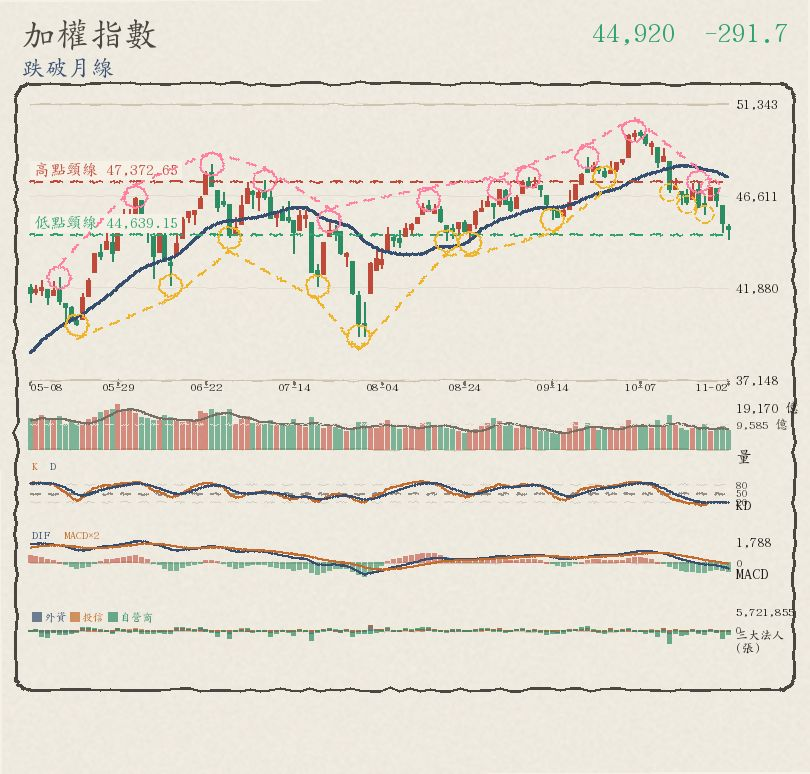
圖說：加權指數日 K（與個股圖相同標記）：黃圈＝轉折低點、粉圈＝轉折高點、虛線小圈＝還沒確認的轉折、藍線＝月線 MA20、水平虛線＝高點／低點頸線。最後一根是資料日當天。
本區塊為公開資料的技術面觀察，不構成投資建議，
不報牌、不預測、不下買賣決策。成交金額為集中市場總成交金額（含 ETF／權證），
與頁首摘要的「上市個股成交金額」口徑不同。標籤是統計，不是評分、也不是推薦。
上市 vs 上櫃（同期快篩）
加權 +3.62% vs 櫃買 +3.35%（同向） → 同向
（兩個市場分開寫，不合併成一個數字；櫃買為 TPEX 公開資料）
櫃買歷史：TPEX 逐日回補 130 根；來源：櫃買中心 www/zh-tw/indexInfo/sectinx（逐日，官方；OpenAPI tpex_index 只回當月）
（TPEX OpenAPI 只回當月，故逐日回補；歷史不足就不算該條均線並標「資料不足」，不用錯數字）
近 20 個交易日大盤狀態回溯（最新在上）（點開看逐日主狀態／量比／量價象限）
用同一支程式回算最近 20 個交易日（主狀態 S1~S8 與量比 20 皆為當日收盤當時的判定，
不是事後調整）；量比 20 未公布的日子寫「—」。
好條件最多的（前 10）
不好條件最多的（前 10）
好條件（7 項）：站上月線、月線向上、底底高、頭頭高、突破頸線、攻擊量（量增＋上漲）、守住今日高檔（距今日高點 1% 內）。
不好條件（7 項）：跌破前低、今日下跌、相對大盤弱、在月線之下、貼近今日低點（1% 內）、跌破昨日低點、月線下彎。
兩邊都是同一組日線資料＋盤中即時價算出來的「符合項目數」，只是把方向相反的條件分開數；
條件數不是評分或推薦，不構成投資建議。
逆勢上漲（加權下跌、個股上漲）（24 上市 16／上櫃 8）
盤中爆量（估量比 ≥ 1.5）（33 上市 19／上櫃 14）
今日疲弱（跌幅前 10）（10 上市 8／上櫃 2）
逐檔（70 檔，依盤中成交金額排序）
台積電 2330 上市
2370 -25.0（-1.04%）
區間或轉弱 盤中成交值 450.23 億・全榜第 1 名（上市第 1 名）・相對大盤 +0.29
好條件 1/7：站上月線
不好條件 3/7：今日下跌、貼近今日低點（1% 內）、月線下彎
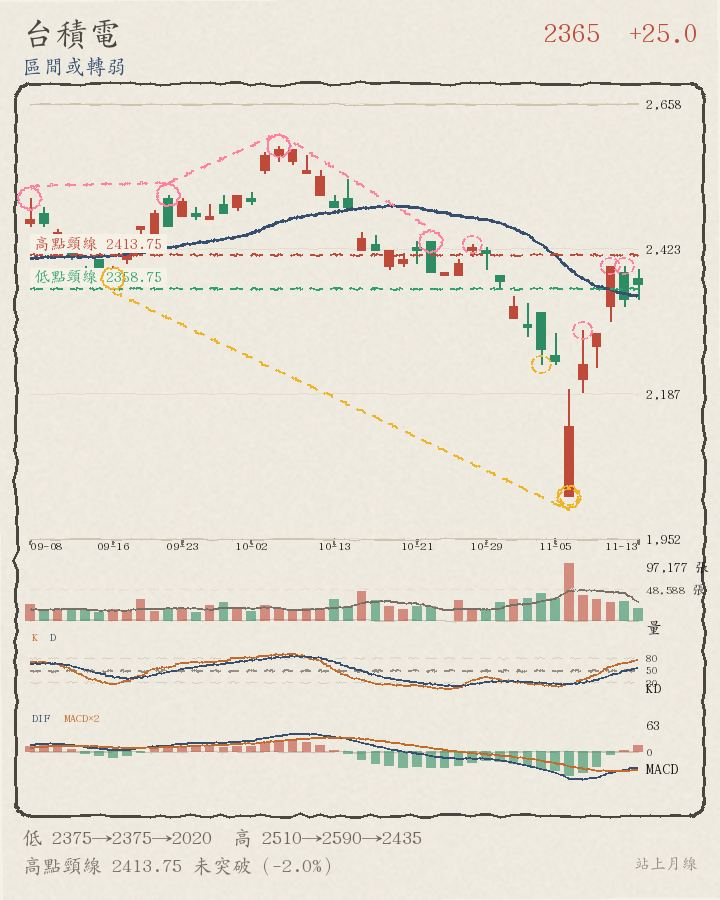
12:31 盤中 2370（-1.04%），比加權指數強 0.29 個百分點、站上月線 2357.5，離高點頸線 2420 還差 2.1%，轉折還沒走出明顯方向。
- 月線位置：現價 2370 在月線 2357.5 之上（+0.5%）；5 日線 2258 也在月線之下（短均在下）；月線向下
- 量能：以已過交易時間推估，今天成交量約是 20 日均量的 0.71 倍（量平），比 20 日均量少很多
- 關鍵價位：高點頸線 2420 還沒突破，差 2.1%；前一交易日高點 2395（低於 1.0%）；今天盤中高點 2395（低於 1.0%）；今天盤中低點 2355（高於 0.6%）
- 轉折結構：低點 2375、2375、2020 與高點 2510、2590、2435 都沒有明顯遞增，屬於區間震盪或轉弱；還沒確認的轉折低點 11-04 2235、11-06 2020；還沒確認的轉折高點 11-09 2290、11-11 2395（圖上虛線小圈）
南亞 1303 上市
301 -12.0（-3.83%）
區間或轉弱 盤中成交值 370.69 億・全榜第 2 名（上市第 2 名）・相對大盤 -2.50
好條件 1/7：站上月線
不好條件 4/7：今日下跌、相對大盤弱、貼近今日低點（1% 內）、月線下彎
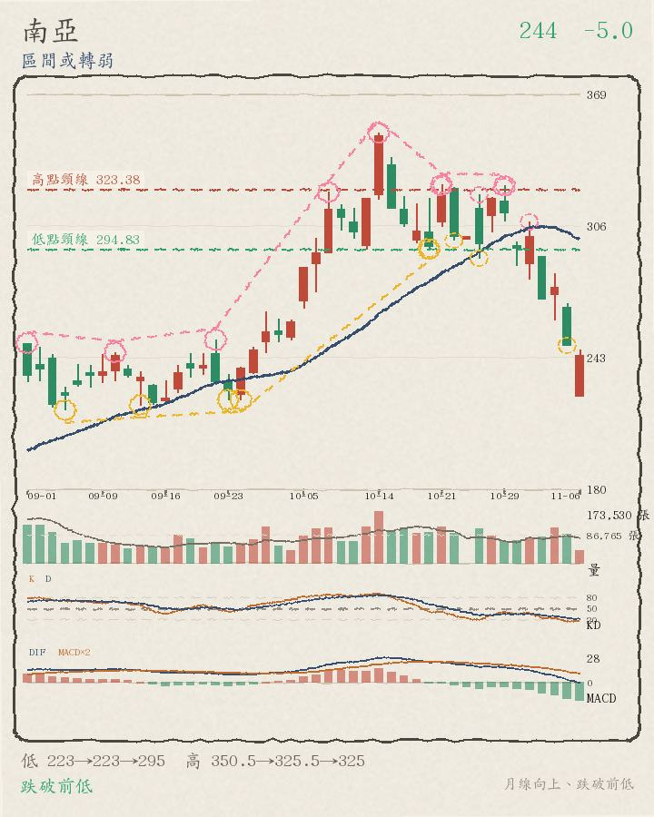
12:31 盤中 301（-3.83%），比加權指數弱 2.50 個百分點、站上月線 295.95，離高點頸線 321.5 還差 6.4%，轉折還沒走出明顯方向。
- 月線位置：現價 301 在月線 295.95 之上（+1.7%）；5 日線 270.7 也在月線之下（短均在下）；月線向下
- 量能：以已過交易時間推估，今天成交量約是 20 日均量的 1.55 倍（爆量），比 20 日均量大不少；下跌卻量增，量價背離
- 關鍵價位：高點頸線 321.5 還沒突破，差 6.4%；前一交易日高點 314.5（低於 4.3%）；今天盤中高點 325.5（低於 7.5%）；今天盤中低點 300.5（高於 0.2%）
- 轉折結構：低點 223、295、224.5 與高點 350.5、325.5、325 都沒有明顯遞增，屬於區間震盪或轉弱；還沒確認的轉折低點 10-27 290.5、11-06 224.5；還沒確認的轉折高點 11-02 308、11-11 314.5（圖上虛線小圈）
台玻 1802 上市
83.5 +6.8（+8.87%）
高點墊高、底部不穩 盤中成交值 366.28 億・全榜第 3 名（上市第 3 名）・相對大盤 +10.20
好條件 6/7：站上月線、月線向上、頭頭高、突破頸線、攻擊量（量增＋上漲）、守住今日高檔（距今日高點 1% 內）
不好條件 0/7：無
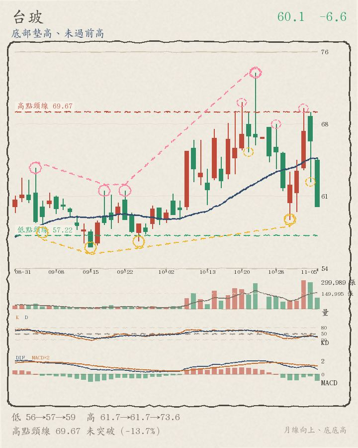
12:31 盤中 83.5（+8.87%），比加權指數強 10.20 個百分點、站上月線 65.625，已突破高點頸線 69.2，高點還在墊高（但底部沒同步墊高）。
- 月線位置：現價 83.5 在月線 65.625 之上（+27.2%）；5 日線 65.58 也在月線之下（短均在下）；月線向上
- 量能：以已過交易時間推估，今天成交量約是 20 日均量的 3.84 倍（爆量），比 20 日均量大不少；上漲又量增，量價配合
- 關鍵價位：高點頸線 69.2 已站上；前一交易日高點 76.7（高於 8.9%）；今天盤中高點 84.3（低於 0.9%）；今天盤中低點 78.2（高於 6.8%）
- 轉折結構：高點 61.7、73.6、70 墊高（頭頭高），但低點 56.6、58.8、54.1 沒有同步墊高；還沒確認的轉折低點 10-30 58.8、11-06 54.1；還沒確認的轉折高點 11-03 70、11-11 76.7（圖上虛線小圈）
聯發科 2454 上市
3950 -40.0（-1.00%）
區間或轉弱 盤中成交值 350.92 億・全榜第 4 名（上市第 4 名）・相對大盤 +0.33
好條件 0/7：無
不好條件 4/7：今日下跌、在月線之下、貼近今日低點（1% 內）、月線下彎

12:31 盤中 3950（-1.00%），比加權指數強 0.33 個百分點、跌破月線 3965.75，離高點頸線 4067.5 還差 2.9%，轉折還沒走出明顯方向。
- 月線位置：現價 3950 在月線 3965.75 之下（-0.4%）；5 日線 3679 也在月線之下（短均在下）；月線向下
- 量能：以已過交易時間推估，今天成交量約是 20 日均量的 1.11 倍（量增），比 20 日均量大一些；下跌卻量增，量價背離
- 關鍵價位：高點頸線 4067.5 還沒突破，差 2.9%；前一交易日高點 3990（低於 1.0%）；今天盤中高點 4120（低於 4.1%）；今天盤中低點 3930（高於 0.5%）
- 轉折結構：低點 4430、4875、3115 與高點 5480、5165、4245 都沒有明顯遞增，屬於區間震盪或轉弱；還沒確認的轉折低點 10-27 3910、11-06 3115；還沒確認的轉折高點 11-02 4070、11-10 4065（圖上虛線小圈）
量增
↑ 回上方清單
富喬 1815 上櫃
138.5 -2.0（-1.42%）
區間或轉弱 盤中成交值 290.07 億・全榜第 5 名（上櫃第 1 名）・相對大盤 -0.09
好條件 1/7：站上月線
不好條件 3/7：今日下跌、相對大盤弱、月線下彎

12:31 盤中 138.5（-1.42%），比加權指數弱 0.09 個百分點、站上月線 135.725，離高點頸線 143.38 還差 3.4%，轉折還沒走出明顯方向。
- 月線位置：現價 138.5 在月線 135.725 之上（+2.0%）；5 日線 127.3 也在月線之下（短均在下）；月線向下
- 量能：以已過交易時間推估，今天成交量約是 20 日均量的 2.25 倍（爆量），比 20 日均量大不少；下跌卻量增，量價背離
- 關鍵價位：高點頸線 143.38 還沒突破，差 3.4%；前一交易日高點 140.5（低於 1.4%）；今天盤中高點 150.5（低於 8.0%）；今天盤中低點 137（高於 1.1%）
- 轉折結構：低點 113、124、109.5 與高點 161.5、149、143.5 都沒有明顯遞增，屬於區間震盪或轉弱；還沒確認的轉折低點 11-02 122、11-06 109.5；還沒確認的轉折高點 11-10 140.5、11-11 140.5（圖上虛線小圈）
創意 3443 上市
8250 +365.0（+4.63%）
區間或轉弱 盤中成交值 223.25 億・全榜第 6 名（上市第 5 名）・相對大盤 +5.96
好條件 2/7：站上月線、攻擊量（量增＋上漲）
不好條件 1/7：月線下彎

12:31 盤中 8250（+4.63%），比加權指數強 5.96 個百分點、站上月線 7429，離高點頸線 8510 還差 3.1%，轉折還沒走出明顯方向。
- 月線位置：現價 8250 在月線 7429 之上（+11.1%）；5 日線 6874 也在月線之下（短均在下）；月線向下
- 量能：以已過交易時間推估，今天成交量約是 20 日均量的 1.48 倍（量增），比 20 日均量大不少；上漲又量增，量價配合
- 關鍵價位：高點頸線 8510 還沒突破，差 3.1%；前一交易日高點 7885（高於 4.6%）；今天盤中高點 8555（低於 3.6%）；今天盤中低點 8005（高於 3.1%）
- 轉折結構：低點 7065、7200、5765 與高點 8750、8490、8255 都沒有明顯遞增，屬於區間震盪或轉弱；還沒確認的轉折低點 11-04 6390、11-06 5765；還沒確認的轉折高點 10-29 8255、11-11 7885（圖上虛線小圈）
穩懋 3105 上櫃
533 +12.0（+2.30%）
區間或轉弱 盤中成交值 197.33 億・全榜第 7 名（上櫃第 2 名）・相對大盤 +3.63
好條件 2/7：站上月線、攻擊量（量增＋上漲）
不好條件 1/7：月線下彎
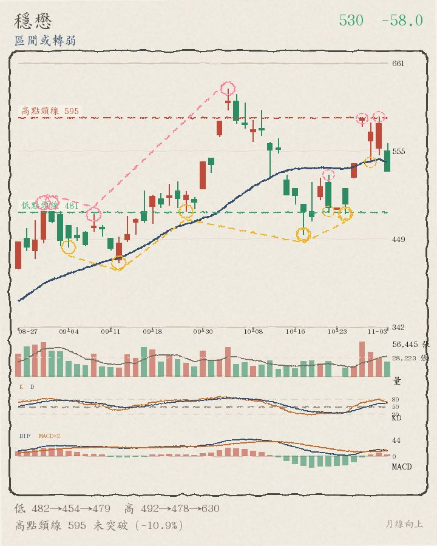
12:31 盤中 533（+2.30%），比加權指數強 3.63 個百分點、站上月線 506.6，離高點頸線 595 還差 10.4%，轉折還沒走出明顯方向。
- 月線位置：現價 533 在月線 506.6 之上（+5.2%）；5 日線 461.8 也在月線之下（短均在下）；月線向下
- 量能：以已過交易時間推估，今天成交量約是 20 日均量的 2.03 倍（爆量），比 20 日均量大不少；上漲又量增，量價配合
- 關鍵價位：高點頸線 595 還沒突破，差 10.4%；前一交易日高點 525（高於 1.5%）；今天盤中高點 573（低於 7.0%）；今天盤中低點 518（高於 2.9%）
- 轉折結構：低點 482、454、479 與高點 478、630、596 都沒有明顯遞增，屬於區間震盪或轉弱；還沒確認的轉折低點 10-30 541、11-09 403.5；還沒確認的轉折高點 11-02 596、11-11 525（圖上虛線小圈）
南亞科 2408 上市
390 -4.0（-1.02%）
區間或轉弱 盤中成交值 185.09 億・全榜第 8 名（上市第 6 名）・相對大盤 +0.31
好條件 0/7：無
不好條件 4/7：今日下跌、在月線之下、貼近今日低點（1% 內）、月線下彎
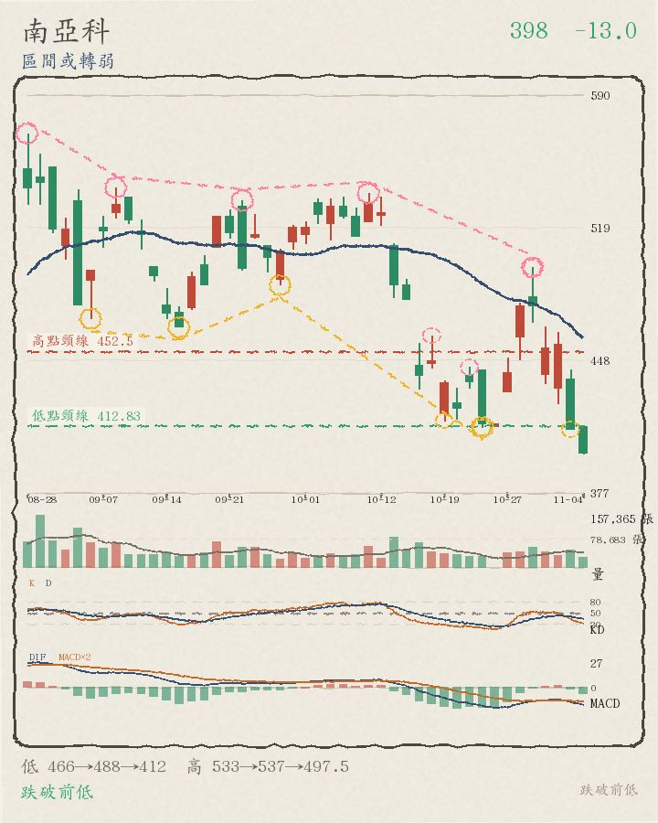
12:31 盤中 390（-1.02%），比加權指數強 0.31 個百分點、跌破月線 422.85，離高點頸線 536.67 還差 27.3%，轉折還沒走出明顯方向。
- 月線位置：現價 390 在月線 422.85 之下（-7.8%）；5 日線 370.1 也在月線之下（短均在下）；月線向下
- 量能：以已過交易時間推估，今天成交量約是 20 日均量的 1.20 倍（量增），比 20 日均量大不少；下跌卻量增，量價背離
- 關鍵價位：高點頸線 536.67 還沒突破，差 27.3%；前一交易日高點 395（低於 1.3%）；今天盤中高點 417（低於 6.5%）；今天盤中低點 389（高於 0.3%）
- 轉折結構：低點 488、412、324 與高點 533、537、497.5 都沒有明顯遞增，屬於區間震盪或轉弱；還沒確認的轉折低點 11-06 324；還沒確認的轉折高點 10-29 497.5、11-10 402（圖上虛線小圈）
量增
↑ 回上方清單
聯茂 6213 上市
545 -35.0（-6.03%）
高點墊高、底部不穩 盤中成交值 180.57 億・全榜第 9 名（上市第 7 名）・相對大盤 -4.70
好條件 1/7：頭頭高
不好條件 6/7：跌破前低、今日下跌、相對大盤弱、在月線之下、貼近今日低點（1% 內）、月線下彎
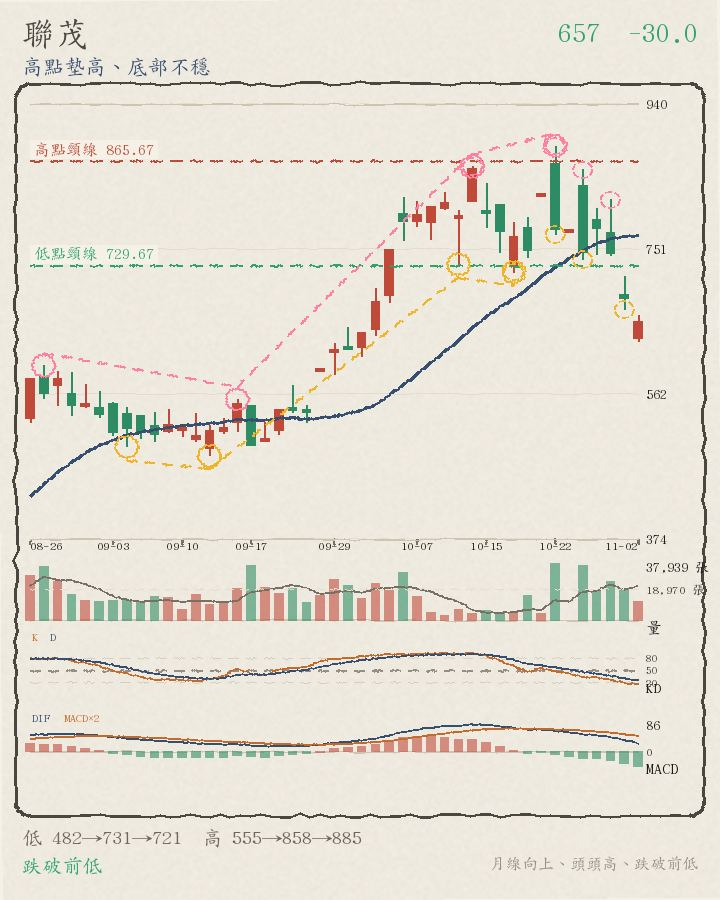
12:31 盤中 545（-6.03%），比加權指數弱 4.70 個百分點、跌破月線 691.6，離高點頸線 865.67 還差 37.0%，高點還在墊高（但底部沒同步墊高）。
- 月線位置：現價 545 在月線 691.6 之下（-21.2%）；5 日線 537.2 也在月線之下（短均在下）；月線向下
- 量能：以已過交易時間推估，今天成交量約是 20 日均量的 2.72 倍（爆量），比 20 日均量大不少；下跌卻量增，量價背離
- 關鍵價位：已跌破前一個轉折低點；高點頸線 865.67 還在現價上方 37.0%；前一交易日高點 580（低於 6.0%）；今天盤中高點 602（低於 9.5%）；今天盤中低點 543（高於 0.4%）
- 轉折結構：高點 555、858、885 墊高（頭頭高），但低點 482、731、721 沒有同步墊高；還沒確認的轉折低點 10-27 737、11-09 481.5；還沒確認的轉折高點 10-29 815、11-10 584（圖上虛線小圈）
健策 3653 上市
5635 -590.0（-9.48%）
區間或轉弱 盤中成交值 178.8 億・全榜第 10 名（上市第 8 名）・相對大盤 -8.15
好條件 0/7：無
不好條件 7/7：跌破前低、今日下跌、相對大盤弱、在月線之下、貼近今日低點（1% 內）、跌破昨日低點、月線下彎
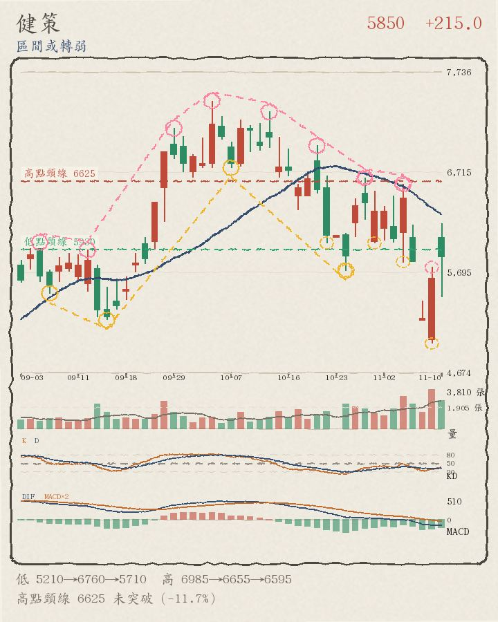
12:31 盤中 5635（-9.48%），比加權指數弱 8.15 個百分點、跌破月線 6244.5，離高點頸線 6536.67 還差 13.8%，轉折還沒走出明顯方向。
- 月線位置：現價 5635 在月線 6244.5 之下（-9.8%）；5 日線 5736 也在月線之下（短均在下）；月線向下
- 量能：以已過交易時間推估，今天成交量約是 20 日均量的 2.16 倍（爆量），比 20 日均量大不少；下跌卻量增，量價背離
- 關鍵價位：已跌破前一個轉折低點；高點頸線 6536.67 還在現價上方 13.8%；前一交易日高點 6360（低於 11.4%）；今天盤中高點 6340（低於 11.1%）；今天盤中低點 5620（高於 0.3%）
- 轉折結構：低點 5210、6760、5710 與高點 6985、6655、6595 都沒有明顯遞增，屬於區間震盪或轉弱；還沒確認的轉折低點 11-04 5800、11-09 4970；還沒確認的轉折高點 11-04 6595、11-11 6360（圖上虛線小圈）
欣興 3037 上市
818 -46.0（-5.32%）
區間或轉弱 盤中成交值 165.9 億・全榜第 11 名（上市第 9 名）・相對大盤 -3.99
好條件 0/7：無
不好條件 5/7：今日下跌、相對大盤弱、在月線之下、貼近今日低點（1% 內）、月線下彎
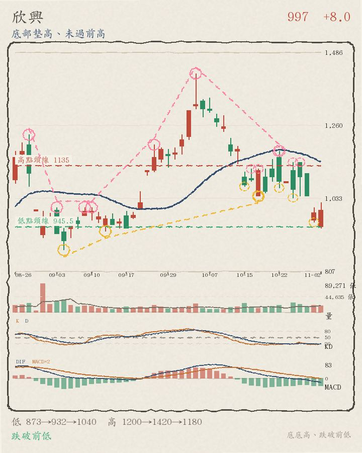
12:31 盤中 818（-5.32%），比加權指數弱 3.99 個百分點、跌破月線 987.35，離高點頸線 1156.67 還差 29.3%，轉折還沒走出明顯方向。
- 月線位置：現價 818 在月線 987.35 之下（-17.1%）；5 日線 795.2 也在月線之下（短均在下）；月線向下
- 量能：以已過交易時間推估，今天成交量約是 20 日均量的 1.13 倍（量增），比 20 日均量大一些；下跌卻量增，量價背離
- 關鍵價位：高點頸線 1156.67 還沒突破，差 29.3%；前一交易日高點 867（低於 5.7%）；今天盤中高點 894（低於 8.5%）；今天盤中低點 816（高於 0.2%）
- 轉折結構：低點 932、1040、720 與高點 1200、1420、1180 都沒有明顯遞增，屬於區間震盪或轉弱；還沒確認的轉折低點 10-27 1035、11-06 720；還沒確認的轉折高點 11-02 1020、11-11 867（圖上虛線小圈）
量增
↑ 回上方清單
世芯-KY 3661 上市
3760 +110.0（+3.01%）
區間或轉弱 盤中成交值 149.23 億・全榜第 12 名（上市第 10 名）・相對大盤 +4.34
好條件 2/7：站上月線、攻擊量（量增＋上漲）
不好條件 1/7：月線下彎

12:31 盤中 3760（+3.01%），比加權指數強 4.34 個百分點、站上月線 3473.5，離高點頸線 3870 還差 2.8%，轉折還沒走出明顯方向。
- 月線位置：現價 3760 在月線 3473.5 之上（+8.2%）；5 日線 3194 也在月線之下（短均在下）；月線向下
- 量能：以已過交易時間推估，今天成交量約是 20 日均量的 2.59 倍（爆量），比 20 日均量大不少；上漲又量增，量價配合
- 關鍵價位：高點頸線 3870 還沒突破，差 2.8%；前一交易日高點 3650（高於 3.0%）；今天盤中高點 3950（低於 4.8%）；今天盤中低點 3660（高於 2.7%）
- 轉折結構：低點 3585、3260、2665 與高點 4490、3835、3825 都沒有明顯遞增，屬於區間震盪或轉弱；還沒確認的轉折低點 10-27 3455、11-06 2665；還沒確認的轉折高點 10-28 3825、11-11 3650（圖上虛線小圈）
台達電 2308 上市
1265 -30.0（-2.32%）
高點墊高、底部不穩 盤中成交值 140.62 億・全榜第 13 名（上市第 11 名）・相對大盤 -0.99
好條件 1/7：頭頭高
不好條件 5/7：今日下跌、相對大盤弱、在月線之下、貼近今日低點（1% 內）、月線下彎

12:31 盤中 1265（-2.32%），比加權指數弱 0.99 個百分點、跌破月線 1433.75，離高點頸線 1877.5 還差 32.6%，高點還在墊高（但底部沒同步墊高）。
- 月線位置：現價 1265 在月線 1433.75 之下（-11.8%）；5 日線 1183 也在月線之下（短均在下）；月線向下
- 量能：以已過交易時間推估，今天成交量約是 20 日均量的 0.96 倍（量平），跟 20 日均量差不多
- 關鍵價位：高點頸線 1877.5 還沒突破，差 32.6%；前一交易日高點 1295（低於 2.3%）；今天盤中高點 1335（低於 5.2%）；今天盤中低點 1255（高於 0.8%）
- 轉折結構：高點 1885、1965、2115 墊高（頭頭高），但低點 1560、1810、1020 沒有同步墊高；還沒確認的轉折低點 11-06 1020、11-11 1230；還沒確認的轉折高點 10-28 1575、11-11 1295（圖上虛線小圈）
台光電 2383 上市
4300 -200.0（-4.44%）
區間或轉弱 盤中成交值 131.88 億・全榜第 14 名（上市第 12 名）・相對大盤 -3.11
好條件 0/7：無
不好條件 6/7：今日下跌、相對大盤弱、在月線之下、貼近今日低點（1% 內）、跌破昨日低點、月線下彎

12:31 盤中 4300（-4.44%），比加權指數弱 3.11 個百分點、跌破月線 4748.75，離高點頸線 5390 還差 20.2%，轉折還沒走出明顯方向。
- 月線位置：現價 4300 在月線 4748.75 之下（-9.4%）；5 日線 4171 也在月線之下（短均在下）；月線向下
- 量能：以已過交易時間推估，今天成交量約是 20 日均量的 1.05 倍（量平），比 20 日均量大一些
- 關鍵價位：高點頸線 5390 還沒突破，差 20.2%；前一交易日高點 4565（低於 5.8%）；今天盤中高點 4550（低於 5.5%）；今天盤中低點 4275（高於 0.6%）
- 轉折結構：低點 4855、4930、3690 與高點 6325、5485、5295 都沒有明顯遞增，屬於區間震盪或轉弱；還沒確認的轉折低點 10-27 4685、11-06 3690；還沒確認的轉折高點 11-02 4835、11-11 4565（圖上虛線小圈）
量平
↑ 回上方清單
國巨* 2327 上市
419 -5.5（-1.30%）
區間或轉弱 盤中成交值 119.93 億・全榜第 15 名（上市第 13 名）・相對大盤 +0.03
好條件 0/7：無
不好條件 4/7：今日下跌、在月線之下、貼近今日低點（1% 內）、月線下彎
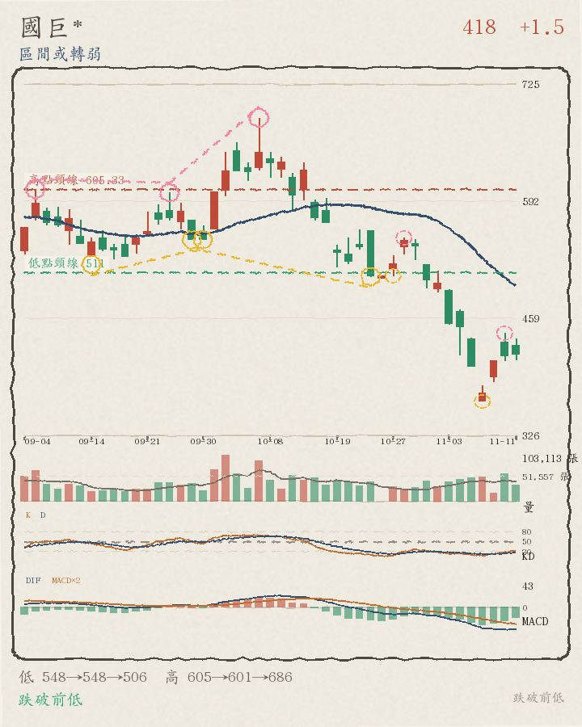
12:31 盤中 419（-1.30%），比加權指數強 0.03 個百分點、跌破月線 496.2，離高點頸線 605.33 還差 30.8%，轉折還沒走出明顯方向。
- 月線位置：現價 419 在月線 496.2 之下（-15.6%）；5 日線 406.1 也在月線之下（短均在下）；月線向下
- 量能：以已過交易時間推估，今天成交量約是 20 日均量的 0.88 倍（量平），比 20 日均量少一些
- 關鍵價位：高點頸線 605.33 還沒突破，差 30.8%；前一交易日高點 435.5（低於 3.8%）；今天盤中高點 441（低於 5.0%）；今天盤中低點 418（高於 0.2%）
- 轉折結構：低點 548、506、364.5 與高點 605、601、686 都沒有明顯遞增，屬於區間震盪或轉弱；還沒確認的轉折低點 10-27 507、11-06 364.5；還沒確認的轉折高點 10-28 550、11-10 442（圖上虛線小圈）
量平
↑ 回上方清單
友達 2409 上市
29.6 +0.9（+3.32%）
區間或轉弱 盤中成交值 108.54 億・全榜第 16 名（上市第 14 名）・相對大盤 +4.65
好條件 1/7：攻擊量（量增＋上漲）
不好條件 2/7：在月線之下、月線下彎

12:31 盤中 29.6（+3.32%），比加權指數強 4.65 個百分點、跌破月線 32.413，離高點頸線 36.91 還差 19.8%，轉折還沒走出明顯方向。
- 月線位置：現價 29.6 在月線 32.413 之下（-8.7%）；5 日線 27.67 也在月線之下（短均在下）；月線向下
- 量能：以已過交易時間推估，今天成交量約是 20 日均量的 1.66 倍（爆量），比 20 日均量大不少；上漲又量增，量價配合
- 關鍵價位：高點頸線 36.91 還沒突破，差 19.8%；前一交易日高點 28.7（高於 3.1%）；今天盤中高點 31.5（低於 6.0%）；今天盤中低點 28.05（高於 5.5%）
- 轉折結構：低點 33.75、34.45、24.55 與高點 43.55、37.8、36.65 都沒有明顯遞增，屬於區間震盪或轉弱；還沒確認的轉折低點 10-27 33.45、11-06 24.55；還沒確認的轉折高點 10-29 36.65、11-10 29.25（圖上虛線小圈）
台燿 6274 上櫃
1000 -60.0（-5.66%）
區間或轉弱 盤中成交值 106.87 億・全榜第 17 名（上櫃第 3 名）・相對大盤 -4.33
好條件 0/7：無
不好條件 6/7：跌破前低、今日下跌、相對大盤弱、在月線之下、貼近今日低點（1% 內）、月線下彎
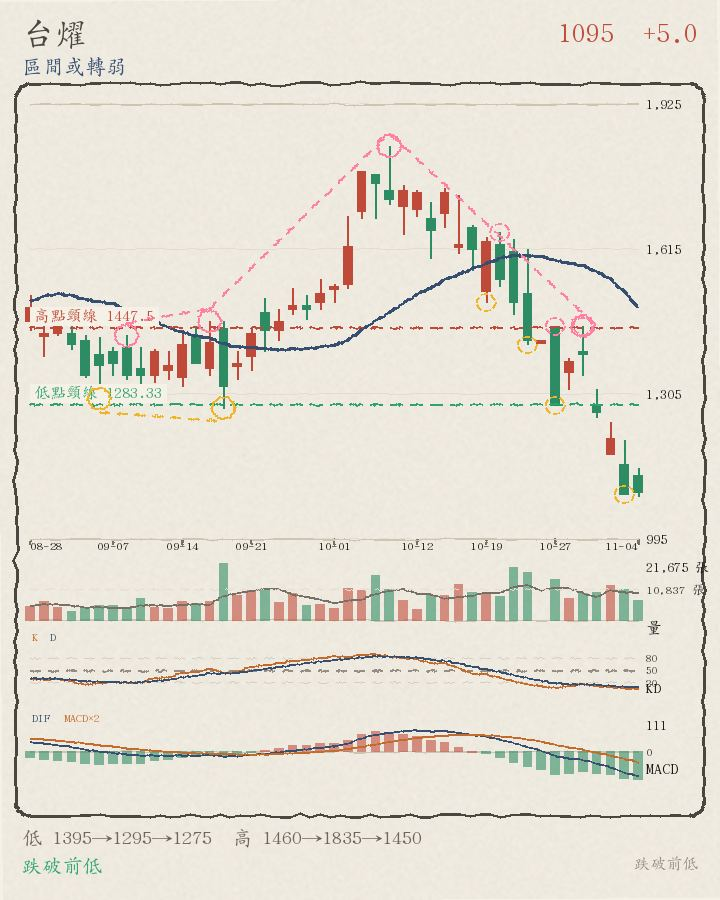
12:31 盤中 1000（-5.66%），比加權指數弱 4.33 個百分點、跌破月線 1306.75，離高點頸線 1447.5 還差 30.9%，轉折還沒走出明顯方向。
- 月線位置：現價 1000 在月線 1306.75 之下（-23.5%）；5 日線 983 也在月線之下（短均在下）；月線向下
- 量能：以已過交易時間推估，今天成交量約是 20 日均量的 1.07 倍（量平），比 20 日均量大一些
- 關鍵價位：已跌破前一個轉折低點；高點頸線 1447.5 還在現價上方 30.9%；前一交易日高點 1070（低於 6.5%）；今天盤中高點 1080（低於 7.4%）；今天盤中低點 998（高於 0.2%）
- 轉折結構：低點 1395、1295、1275 與高點 1460、1835、1450 都沒有明顯遞增，屬於區間震盪或轉弱；還沒確認的轉折低點 10-27 1280、11-09 897；還沒確認的轉折高點 10-29 1450、11-11 1070（圖上虛線小圈）
華通 2313 上市
201.5 +9.0（+4.68%）
高點墊高、底部不穩 盤中成交值 99.66 億・全榜第 18 名（上市第 15 名）・相對大盤 +6.01
好條件 2/7：頭頭高、攻擊量（量增＋上漲）
不好條件 2/7：在月線之下、月線下彎

12:31 盤中 201.5（+4.68%），比加權指數強 6.01 個百分點、跌破月線 210.525，離高點頸線 232 還差 13.1%，高點還在墊高（但底部沒同步墊高）。
- 月線位置：現價 201.5 在月線 210.525 之下（-4.3%）；5 日線 174.8 也在月線之下（短均在下）；月線向下
- 量能：以已過交易時間推估，今天成交量約是 20 日均量的 2.27 倍（爆量），比 20 日均量大不少；上漲又量增，量價配合
- 關鍵價位：高點頸線 232 還沒突破，差 13.1%；前一交易日高點 193.5（高於 4.1%）；今天盤中高點 211.5（低於 4.7%）；今天盤中低點 190（高於 6.1%）
- 轉折結構：高點 235、261、266 墊高（頭頭高），但低點 219、228、149 沒有同步墊高；還沒確認的轉折低點 10-27 215、11-06 149；還沒確認的轉折高點 11-02 209、11-11 193.5（圖上虛線小圈）
大量 3167 上市
914 +33.0（+3.75%）
區間或轉弱 盤中成交值 97.72 億・全榜第 19 名（上市第 16 名）・相對大盤 +5.08
好條件 2/7：站上月線、攻擊量（量增＋上漲）
不好條件 1/7：月線下彎

12:31 盤中 914（+3.75%），比加權指數強 5.08 個百分點、站上月線 907.75，離高點頸線 1030 還差 11.3%，轉折還沒走出明顯方向。
- 月線位置：現價 914 在月線 907.75 之上（+0.7%）；5 日線 779.6 也在月線之下（短均在下）；月線向下
- 量能：以已過交易時間推估，今天成交量約是 20 日均量的 3.08 倍（爆量），比 20 日均量大不少；上漲又量增，量價配合
- 關鍵價位：高點頸線 1030 還沒突破，差 11.3%；前一交易日高點 881（高於 3.7%）；今天盤中高點 960（低於 4.8%）；今天盤中低點 863（高於 5.9%）
- 轉折結構：低點 951、884、700 與高點 1090、1030、1030 都沒有明顯遞增，屬於區間震盪或轉弱；還沒確認的轉折低點 11-06 700、11-09 700；還沒確認的轉折高點 10-29 1030、11-11 881（圖上虛線小圈）
旺矽 6223 上櫃
4765 +285.0（+6.36%）
區間或轉弱 盤中成交值 97.59 億・全榜第 20 名（上櫃第 4 名）・相對大盤 +7.69
好條件 2/7：站上月線、攻擊量（量增＋上漲）
不好條件 1/7：月線下彎
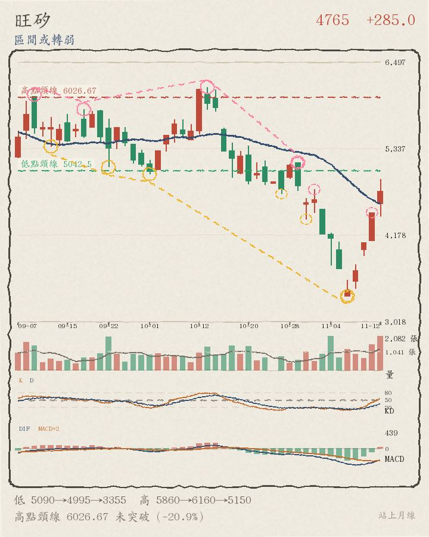
12:31 盤中 4765（+6.36%），比加權指數強 7.69 個百分點、站上月線 4653.75，離高點頸線 6026.67 還差 20.9%，轉折還沒走出明顯方向。
- 月線位置：現價 4765 在月線 4653.75 之上（+2.4%）；5 日線 3886 也在月線之下（短均在下）；月線向下
- 量能：以已過交易時間推估，今天成交量約是 20 日均量的 2.66 倍（爆量），比 20 日均量大不少；上漲又量增，量價配合
- 關鍵價位：高點頸線 6026.67 還沒突破，差 20.9%；前一交易日高點 4480（高於 6.4%）；今天盤中高點 4925（低於 3.2%）；今天盤中低點 4430（高於 7.6%）
- 轉折結構：低點 5090、4995、3355 與高點 5860、6160、5150 都沒有明顯遞增，屬於區間震盪或轉弱；還沒確認的轉折低點 10-30 4390、11-06 3355；還沒確認的轉折高點 11-02 4790、11-11 4480（圖上虛線小圈）
南電 8046 上市
1000 -80.0（-7.41%）
底部墊高、未過前高 盤中成交值 97.23 億・全榜第 21 名（上市第 17 名）・相對大盤 -6.08
好條件 1/7：底底高
不好條件 5/7：跌破前低、今日下跌、相對大盤弱、在月線之下、月線下彎

12:31 盤中 1000（-7.41%），比加權指數弱 6.08 個百分點、跌破月線 1194，離高點頸線 1102.5 還差 9.3%，底部還在墊高（但高點沒同步創高）。
- 月線位置：現價 1000 在月線 1194 之下（-16.2%）；5 日線 973 也在月線之下（短均在下）；月線向下
- 量能：以已過交易時間推估，今天成交量約是 20 日均量的 1.32 倍（量增），比 20 日均量大不少；下跌卻量增，量價背離
- 關鍵價位：已跌破前一個轉折低點；高點頸線 1102.5 還在現價上方 9.3%；前一交易日高點 1080（低於 7.4%）；今天盤中高點 1075（低於 7.0%）；今天盤中低點 1000（高於 0.0%）
- 轉折結構：低點 1010、1025、1050 墊高（底底高），但高點 1125、1560、1400 沒有同步創高；還沒確認的轉折低點 10-28 1235、11-09 867；還沒確認的轉折高點 11-02 1220、11-11 1080（圖上虛線小圈）
臻鼎-KY 4958 上市
444.5 -16.5（-3.58%）
區間或轉弱 盤中成交值 96.85 億・全榜第 22 名（上市第 18 名）・相對大盤 -2.25
好條件 0/7：無
不好條件 5/7：今日下跌、相對大盤弱、在月線之下、貼近今日低點（1% 內）、月線下彎
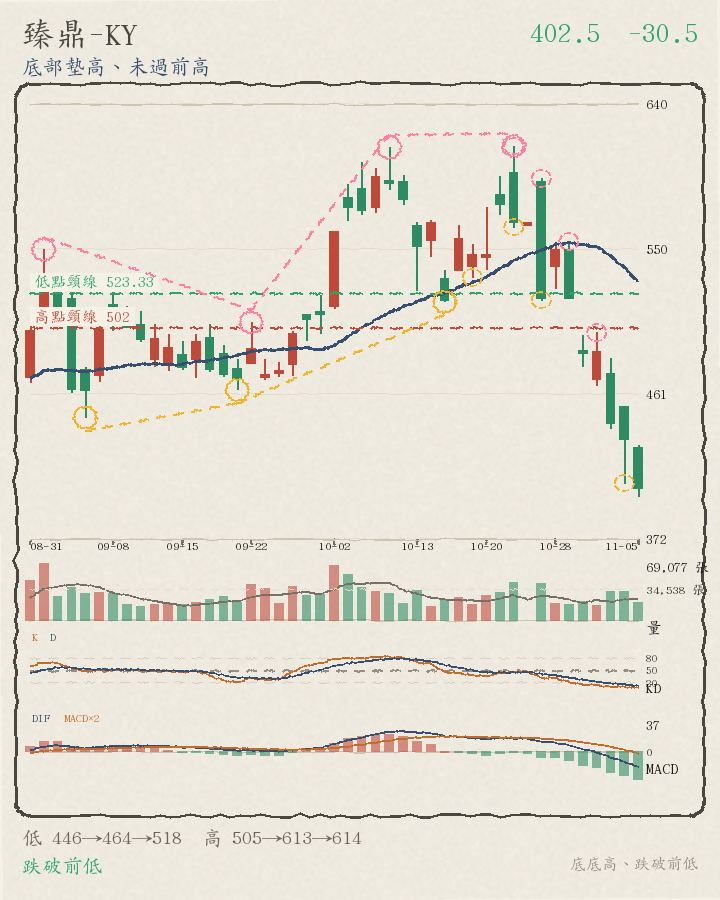
12:31 盤中 444.5（-3.58%），比加權指數弱 2.25 個百分點、跌破月線 497.225，離高點頸線 607 還差 26.8%，轉折還沒走出明顯方向。
- 月線位置：現價 444.5 在月線 497.225 之下（-10.6%）；5 日線 411.3 也在月線之下（短均在下）；月線向下
- 量能：以已過交易時間推估，今天成交量約是 20 日均量的 1.00 倍（量平），跟 20 日均量差不多
- 關鍵價位：高點頸線 607 還沒突破，差 26.8%；前一交易日高點 463（低於 4.0%）；今天盤中高點 466.5（低於 4.7%）；今天盤中低點 443（高於 0.3%）
- 轉折結構：低點 463.5、518、355 與高點 505、613、614 都沒有明顯遞增，屬於區間震盪或轉弱；還沒確認的轉折低點 10-27 519、11-06 355；還沒確認的轉折高點 11-02 499、11-11 463（圖上虛線小圈）
量平
↑ 回上方清單
玉晶光 3406 上市
1010 +15.0（+1.51%）
區間或轉弱 盤中成交值 94.14 億・全榜第 23 名（上市第 19 名）・相對大盤 +2.84
好條件 1/7：攻擊量（量增＋上漲）
不好條件 2/7：在月線之下、月線下彎
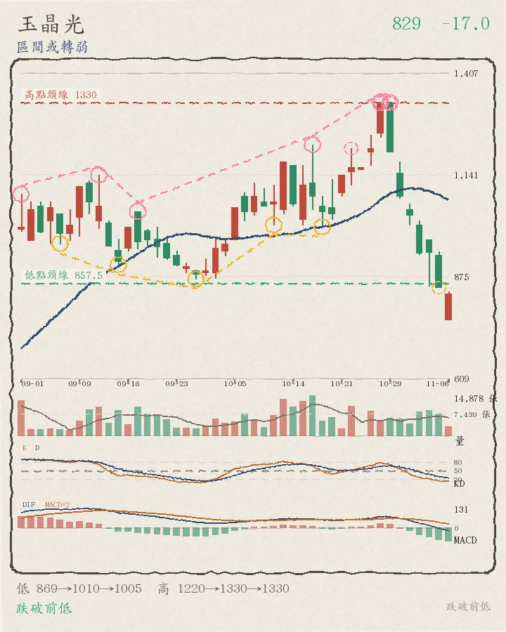
12:31 盤中 1010（+1.51%），比加權指數強 2.84 個百分點、跌破月線 1047.85，離高點頸線 1330 還差 24.1%，轉折還沒走出明顯方向。
- 月線位置：現價 1010 在月線 1047.85 之下（-3.6%）；5 日線 882.4 也在月線之下（短均在下）；月線向下
- 量能：以已過交易時間推估，今天成交量約是 20 日均量的 1.43 倍（量增），比 20 日均量大不少；上漲又量增，量價配合
- 關鍵價位：高點頸線 1330 還沒突破，差 24.1%；前一交易日高點 995（高於 1.5%）；今天盤中高點 1085（低於 6.9%）；今天盤中低點 999（高於 1.1%）
- 轉折結構：低點 1010、1005、762 與高點 1220、1330、1330 都沒有明顯遞增，屬於區間震盪或轉弱；還沒確認的轉折低點 11-06 762；還沒確認的轉折高點 10-29 1330、11-11 995（圖上虛線小圈）
日月光投控 3711 上市
598 -19.0（-3.08%）
區間或轉弱 盤中成交值 92.93 億・全榜第 24 名（上市第 20 名）・相對大盤 -1.75
好條件 0/7：無
不好條件 5/7：今日下跌、相對大盤弱、在月線之下、貼近今日低點（1% 內）、月線下彎

12:31 盤中 598（-3.08%），比加權指數弱 1.75 個百分點、跌破月線 645.45，離高點頸線 700 還差 14.6%，轉折還沒走出明顯方向。
- 月線位置：現價 598 在月線 645.45 之下（-7.3%）；5 日線 576.4 也在月線之下（短均在下）；月線向下
- 量能：以已過交易時間推估，今天成交量約是 20 日均量的 0.86 倍（量平），比 20 日均量少一些
- 關鍵價位：高點頸線 700 還沒突破，差 14.6%；前一交易日高點 620（低於 3.5%）；今天盤中高點 630（低於 5.1%）；今天盤中低點 597（高於 0.2%）
- 轉折結構：低點 715、639、515 與高點 765、699、709 都沒有明顯遞增，屬於區間震盪或轉弱；還沒確認的轉折低點 10-30 624、11-06 515；還沒確認的轉折高點 11-02 692、11-11 620（圖上虛線小圈）
量平
↑ 回上方清單
金居 8358 上櫃
388 -0.5（-0.13%）
區間或轉弱 盤中成交值 90.9 億・全榜第 25 名（上櫃第 5 名）・相對大盤 +1.20
好條件 0/7：無
不好條件 3/7：今日下跌、在月線之下、月線下彎
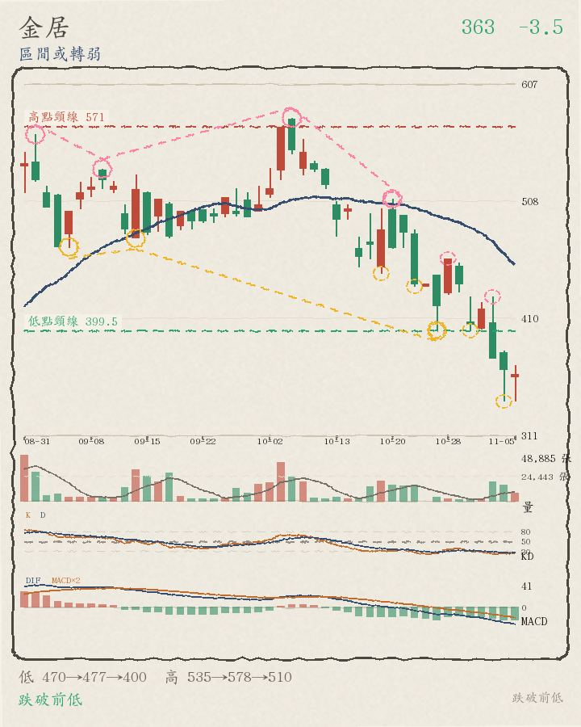
12:31 盤中 388（-0.13%），比加權指數強 1.20 個百分點、跌破月線 417.825，轉折還沒走出明顯方向。
- 月線位置：現價 388 在月線 417.825 之下（-7.1%）；5 日線 344.9 也在月線之下（短均在下）；月線向下
- 量能：以已過交易時間推估，今天成交量約是 20 日均量的 2.98 倍（爆量），比 20 日均量大不少；下跌卻量增，量價背離
- 關鍵價位：前一交易日高點 397.5（低於 2.4%）；今天盤中高點 413（低於 6.1%）；今天盤中低點 376（高於 3.2%）
- 轉折結構：低點 477、399.5、301 與高點 535、578、510 都沒有明顯遞增，屬於區間震盪或轉弱；還沒確認的轉折低點 10-30 399.5、11-06 301；還沒確認的轉折高點 11-03 428、11-11 397.5（圖上虛線小圈）
群創 3481 上市
39.9 -0.7（-1.72%）
區間或轉弱 盤中成交值 90.03 億・全榜第 26 名（上市第 21 名）・相對大盤 -0.39
好條件 0/7：無
不好條件 5/7：今日下跌、相對大盤弱、在月線之下、貼近今日低點（1% 內）、月線下彎
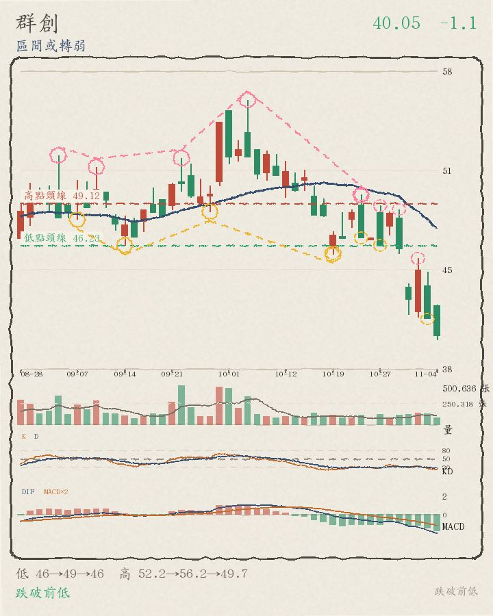
12:31 盤中 39.9（-1.72%），比加權指數弱 0.39 個百分點、跌破月線 44.33，離高點頸線 49.12 還差 18.8%，轉折還沒走出明顯方向。
- 月線位置：現價 39.9 在月線 44.33 之下（-10.0%）；5 日線 38.7 也在月線之下（短均在下）；月線向下
- 量能：以已過交易時間推估，今天成交量約是 20 日均量的 2.25 倍（爆量），比 20 日均量大不少；下跌卻量增，量價背離
- 關鍵價位：高點頸線 49.12 還沒突破，差 18.8%；前一交易日高點 40.6（低於 1.7%）；今天盤中高點 43.3（低於 7.9%）；今天盤中低點 39.6（高於 0.8%）
- 轉折結構：低點 48.55、45.65、34.2 與高點 52.2、56.2、49.7 都沒有明顯遞增，屬於區間震盪或轉弱；還沒確認的轉折低點 10-27 46.25、11-06 34.2；還沒確認的轉折高點 11-02 45.35、11-10 41.4（圖上虛線小圈）
高力 8996 上市
1475 +15.0（+1.03%）
區間或轉弱 盤中成交值 85.74 億・全榜第 27 名（上市第 22 名）・相對大盤 +2.36
好條件 1/7：攻擊量（量增＋上漲）
不好條件 2/7：在月線之下、月線下彎

12:31 盤中 1475（+1.03%），比加權指數強 2.36 個百分點、跌破月線 1478.5，離高點頸線 1607.5 還差 8.2%，轉折還沒走出明顯方向。
- 月線位置：現價 1475 在月線 1478.5 之下（-0.2%）；5 日線 1323 也在月線之下（短均在下）；月線向下
- 量能：以已過交易時間推估，今天成交量約是 20 日均量的 1.71 倍（爆量），比 20 日均量大不少；上漲又量增，量價配合
- 關鍵價位：高點頸線 1607.5 還沒突破，差 8.2%；前一交易日高點 1460（高於 1.0%）；今天盤中高點 1575（低於 6.3%）；今天盤中低點 1360（高於 8.5%）
- 轉折結構：低點 1470、1455、1165 與高點 1665、1800、1770 都沒有明顯遞增，屬於區間震盪或轉弱；還沒確認的轉折低點 11-04 1275、11-06 1165；還沒確認的轉折高點 11-02 1535、11-11 1460（圖上虛線小圈）
聯電 2303 上市
103 -1.0（-0.96%）
區間或轉弱 盤中成交值 84.87 億・全榜第 28 名（上市第 23 名）・相對大盤 +0.37
好條件 0/7：無
不好條件 4/7：今日下跌、在月線之下、貼近今日低點（1% 內）、月線下彎
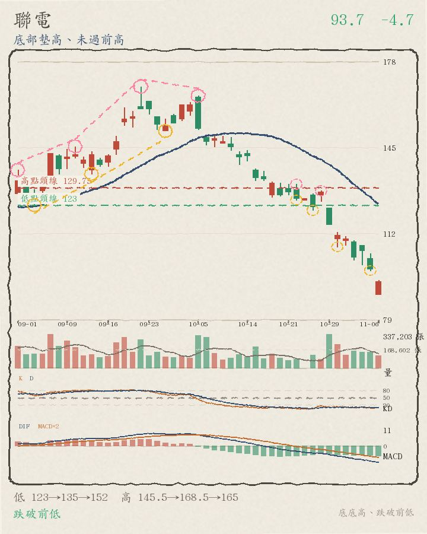
12:31 盤中 103（-0.96%），比加權指數強 0.37 個百分點、跌破月線 116.68，離高點頸線 166.75 還差 38.2%，轉折還沒走出明顯方向。
- 月線位置：現價 103 在月線 116.68 之下（-11.7%）；5 日線 98.32 也在月線之下（短均在下）；月線向下
- 量能：以已過交易時間推估，今天成交量約是 20 日均量的 0.69 倍（量縮），比 20 日均量少很多
- 關鍵價位：高點頸線 166.75 還沒突破，差 38.2%；前一交易日高點 104（低於 1.0%）；今天盤中高點 107.5（低於 4.2%）；今天盤中低點 102.5（高於 0.5%）
- 轉折結構：低點 135、151.5、88.6 與高點 145.5、168.5、165 都沒有明顯遞增，屬於區間震盪或轉弱；還沒確認的轉折低點 10-30 107、11-06 88.6；還沒確認的轉折高點 10-28 128.5、11-11 104（圖上虛線小圈）
量縮
↑ 回上方清單
奇鋐 3017 上市
2900 -140.0（-4.61%）
區間或轉弱 盤中成交值 84.85 億・全榜第 29 名（上市第 24 名）・相對大盤 -3.28
好條件 0/7：無
不好條件 5/7：今日下跌、相對大盤弱、在月線之下、貼近今日低點（1% 內）、月線下彎

12:31 盤中 2900（-4.61%），比加權指數弱 3.28 個百分點、跌破月線 3024.5，離高點頸線 3082.5 還差 5.9%，轉折還沒走出明顯方向。
- 月線位置：現價 2900 在月線 3024.5 之下（-4.1%）；5 日線 2649 也在月線之下（短均在下）；月線向下
- 量能：以已過交易時間推估，今天成交量約是 20 日均量的 1.29 倍（量增），比 20 日均量大不少；下跌卻量增，量價背離
- 關鍵價位：高點頸線 3082.5 還沒突破，差 5.9%；前一交易日高點 3050（低於 4.9%）；今天盤中高點 3060（低於 5.2%）；今天盤中低點 2890（高於 0.3%）
- 轉折結構：低點 3285、3050、2310 與高點 3600、3700、3450 都沒有明顯遞增，屬於區間震盪或轉弱；還沒確認的轉折低點 11-06 2310、11-09 2310；還沒確認的轉折高點 11-03 3115、11-11 3050（圖上虛線小圈）
量增
↑ 回上方清單
大立光 3008 上市
5260 -65.0（-1.22%）
區間或轉弱 盤中成交值 84.84 億・全榜第 30 名（上市第 25 名）・相對大盤 +0.11
好條件 0/7：無
不好條件 3/7：今日下跌、在月線之下、月線下彎
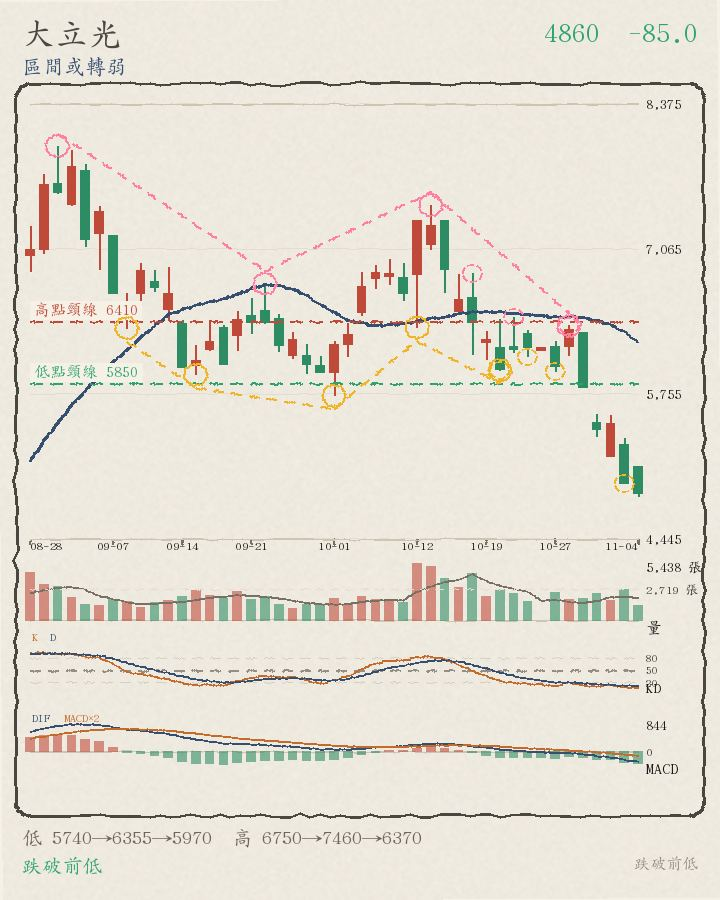
12:31 盤中 5260（-1.22%），比加權指數強 0.11 個百分點、跌破月線 5698.5，轉折還沒走出明顯方向。
- 月線位置：現價 5260 在月線 5698.5 之下（-7.7%）；5 日線 4864 也在月線之下（短均在下）；月線向下
- 量能：以已過交易時間推估，今天成交量約是 20 日均量的 0.73 倍（量平），比 20 日均量少很多
- 關鍵價位：前一交易日高點 5335（低於 1.4%）；今天盤中高點 5490（低於 4.2%）；今天盤中低點 5180（高於 1.5%）
- 轉折結構：低點 6355、5970、4075 與高點 6750、7460、6370 都沒有明顯遞增，屬於區間震盪或轉弱；還沒確認的轉折低點 10-27 5960、11-06 4075；還沒確認的轉折高點 10-28 6370、11-11 5335（圖上虛線小圈）
量平
↑ 回上方清單
金像電 2368 上市
1010 -40.0（-3.81%）
區間或轉弱 盤中成交值 83.31 億・全榜第 31 名（上市第 26 名）・相對大盤 -2.48
好條件 0/7：無
不好條件 5/7：今日下跌、相對大盤弱、在月線之下、貼近今日低點（1% 內）、月線下彎
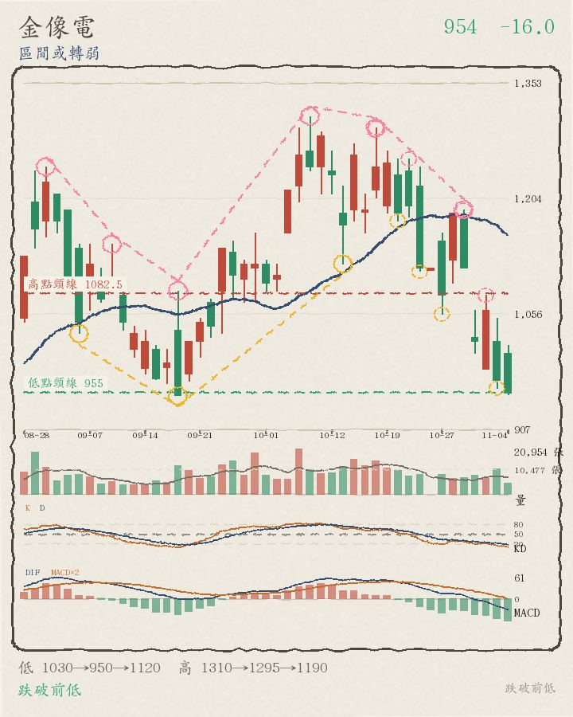
12:31 盤中 1010（-3.81%），比加權指數弱 2.48 個百分點、跌破月線 1077.85，離高點頸線 1081.67 還差 6.6%，轉折還沒走出明顯方向。
- 月線位置：現價 1010 在月線 1077.85 之下（-6.3%）；5 日線 921.6 也在月線之下（短均在下）；月線向下
- 量能：以已過交易時間推估，今天成交量約是 20 日均量的 0.99 倍（量平），跟 20 日均量差不多
- 關鍵價位：高點頸線 1081.67 還沒突破，差 6.6%；前一交易日高點 1080（低於 6.5%）；今天盤中高點 1085（低於 6.9%）；今天盤中低點 1005（高於 0.5%）
- 轉折結構：低點 950、1120、782 與高點 1310、1295、1190 都沒有明顯遞增，屬於區間震盪或轉弱；還沒確認的轉折低點 10-27 1055、11-06 782；還沒確認的轉折高點 11-02 1080、11-11 1080（圖上虛線小圈）
量平
↑ 回上方清單
精材 3374 上櫃
513 +46.5（+9.97%）
區間或轉弱 盤中成交值 78.66 億・全榜第 32 名（上櫃第 6 名）・相對大盤 +11.30
好條件 3/7：站上月線、突破頸線、攻擊量（量增＋上漲）
不好條件 1/7：月線下彎
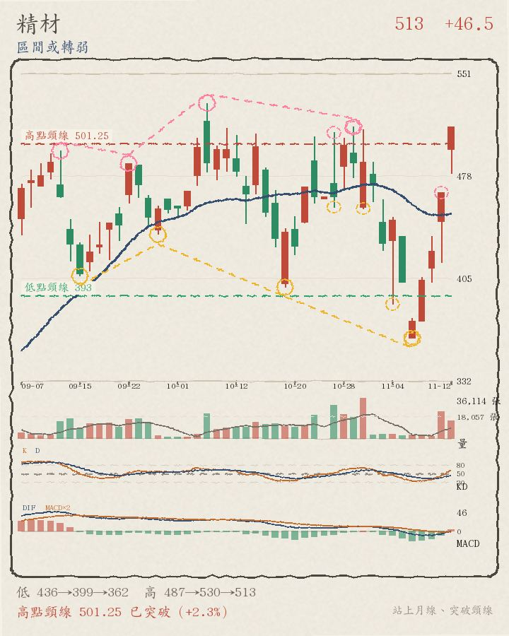
12:31 盤中 513（+9.97%），比加權指數強 11.30 個百分點、站上月線 450.425，已突破高點頸線 501.25，轉折還沒走出明顯方向。
- 月線位置：現價 513 在月線 450.425 之上（+13.9%）；5 日線 414.5 也在月線之下（短均在下）；月線向下
- 量能：以已過交易時間推估，今天成交量約是 20 日均量的 1.64 倍（爆量），比 20 日均量大不少；上漲又量增，量價配合
- 關鍵價位：高點頸線 501.25 已站上；前一交易日高點 466.5（高於 10.0%）；今天盤中高點 513（高於 0.0%）；今天盤中低點 480（高於 6.9%）
- 轉折結構：低點 436.5、399、362.5 與高點 487、530、513 都沒有明顯遞增，屬於區間震盪或轉弱；還沒確認的轉折低點 11-04 387、11-06 362.5；還沒確認的轉折高點 10-29 513、11-11 466.5（圖上虛線小圈）
騰輝電子-KY 6672 上市
510 -15.0（-2.86%）
區間或轉弱 盤中成交值 77.26 億・全榜第 33 名（上市第 27 名）・相對大盤 -1.53
好條件 0/7：無
不好條件 4/7：今日下跌、相對大盤弱、在月線之下、月線下彎
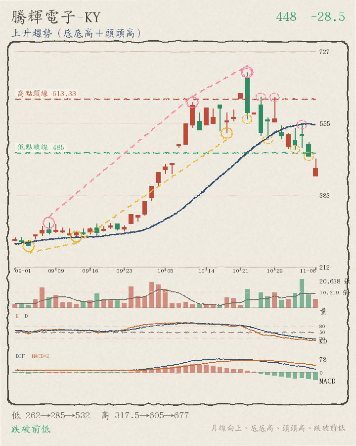
12:31 盤中 510（-2.86%），比加權指數弱 1.53 個百分點、跌破月線 544.125，離高點頸線 545.33 還差 6.5%，轉折還沒走出明顯方向。
- 月線位置：現價 510 在月線 544.125 之下（-6.3%）；5 日線 492.3 也在月線之下（短均在下）；月線向下
- 量能：以已過交易時間推估，今天成交量約是 20 日均量的 2.52 倍（爆量），比 20 日均量大不少；下跌卻量增，量價背離
- 關鍵價位：高點頸線 545.33 還沒突破，差 6.5%；前一交易日高點 542（低於 5.9%）；今天盤中高點 577（低於 11.6%）；今天盤中低點 510（高於 0.0%）
- 轉折結構：低點 285、532、429 與高點 605、677、552 都沒有明顯遞增，屬於區間震盪或轉弱；還沒確認的轉折低點 11-03 493.5、11-06 429；還沒確認的轉折高點 11-10 542、11-11 542（圖上虛線小圈）
華邦電 2344 上市
131 -5.5（-4.03%）
區間或轉弱 盤中成交值 75.28 億・全榜第 34 名（上市第 28 名）・相對大盤 -2.70
好條件 0/7：無
不好條件 4/7：今日下跌、相對大盤弱、在月線之下、月線下彎

12:31 盤中 131（-4.03%），比加權指數弱 2.70 個百分點、跌破月線 151.475，離高點頸線 181 還差 27.6%，轉折還沒走出明顯方向。
- 月線位置：現價 131 在月線 151.475 之下（-13.5%）；5 日線 130.4 也在月線之下（短均在下）；月線向下
- 量能：以已過交易時間推估，今天成交量約是 20 日均量的 1.09 倍（量平），比 20 日均量大一些
- 關鍵價位：高點頸線 181 還沒突破，差 27.6%；前一交易日高點 136.5（低於 4.0%）；今天盤中高點 141（低於 7.1%）；今天盤中低點 131（高於 0.0%）
- 轉折結構：低點 151、151、115 與高點 180.5、184、178.5 都沒有明顯遞增，屬於區間震盪或轉弱；還沒確認的轉折低點 11-06 115、11-11 127；還沒確認的轉折高點 10-29 178.5、11-10 142（圖上虛線小圈）
量平
↑ 回上方清單
華新科 2492 上市
283 -5.0（-1.74%）
區間或轉弱 盤中成交值 73.84 億・全榜第 35 名（上市第 29 名）・相對大盤 -0.41
好條件 0/7：無
不好條件 4/7：今日下跌、相對大盤弱、在月線之下、月線下彎
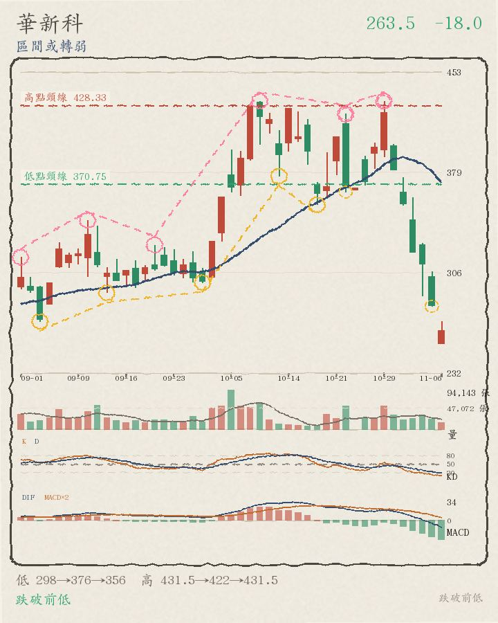
12:31 盤中 283（-1.74%），比加權指數弱 0.41 個百分點、跌破月線 353.225，離高點頸線 428.33 還差 33.9%，轉折還沒走出明顯方向。
- 月線位置：現價 283 在月線 353.225 之下（-19.9%）；5 日線 280.1 也在月線之下（短均在下）；月線向下
- 量能：以已過交易時間推估，今天成交量約是 20 日均量的 1.32 倍（量增），比 20 日均量大不少；下跌卻量增，量價背離
- 關鍵價位：高點頸線 428.33 還沒突破，差 33.9%；前一交易日高點 307（低於 7.8%）；今天盤中高點 304.5（低於 7.1%）；今天盤中低點 283（高於 0.0%）
- 轉折結構：低點 376.5、355.5、253.5 與高點 431.5、422、431.5 都沒有明顯遞增，屬於區間震盪或轉弱；還沒確認的轉折低點 11-06 253.5、11-11 277；還沒確認的轉折高點 10-29 431.5、11-11 307（圖上虛線小圈）
量增
↑ 回上方清單
環球晶 6488 上櫃
636 +1.0（+0.16%）
區間或轉弱 盤中成交值 73.76 億・全榜第 36 名（上櫃第 7 名）・相對大盤 +1.49
好條件 1/7：攻擊量（量增＋上漲）
不好條件 3/7：在月線之下、貼近今日低點（1% 內）、月線下彎
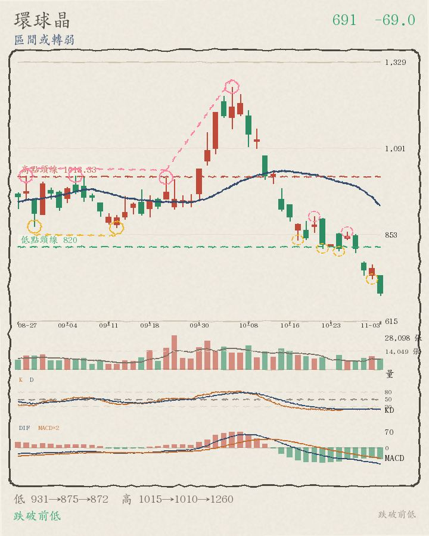
12:31 盤中 636（+0.16%），比加權指數強 1.49 個百分點、跌破月線 764.3，離高點頸線 1013.33 還差 37.2%，轉折還沒走出明顯方向。
- 月線位置：現價 636 在月線 764.3 之下（-16.8%）；5 日線 577.2 也在月線之下（短均在下）；月線向下
- 量能：以已過交易時間推估，今天成交量約是 20 日均量的 1.19 倍（量增），比 20 日均量大不少；上漲又量增，量價配合
- 關鍵價位：高點頸線 1013.33 還沒突破，差 37.2%；前一交易日高點 635（高於 0.2%）；今天盤中高點 663（低於 4.1%）；今天盤中低點 632（高於 0.6%）
- 轉折結構：低點 875、872、508 與高點 1015、1010、1260 都沒有明顯遞增，屬於區間震盪或轉弱；還沒確認的轉折低點 10-27 807、11-06 508；還沒確認的轉折高點 10-28 860、11-11 635（圖上虛線小圈）
禾伸堂 3026 上市
512 -49.0（-8.73%）
區間或轉弱 盤中成交值 72.84 億・全榜第 37 名（上市第 30 名）・相對大盤 -7.40
好條件 0/7：無
不好條件 6/7：今日下跌、相對大盤弱、在月線之下、貼近今日低點（1% 內）、跌破昨日低點、月線下彎

12:31 盤中 512（-8.73%），比加權指數弱 7.40 個百分點、跌破月線 681.425，離高點頸線 780.5 還差 34.4%，轉折還沒走出明顯方向。
- 月線位置：現價 512 在月線 681.425 之下（-24.9%）；5 日線 514.7 也在月線之下（短均在下）；月線向下
- 量能：以已過交易時間推估，今天成交量約是 20 日均量的 1.63 倍（爆量），比 20 日均量大不少；下跌卻量增，量價背離
- 關鍵價位：高點頸線 780.5 還沒突破，差 34.4%；前一交易日高點 561（低於 8.7%）；今天盤中高點 571（低於 10.3%）；今天盤中低點 511（高於 0.2%）
- 轉折結構：低點 726、704、475.5 與高點 881、888、859 都沒有明顯遞增，屬於區間震盪或轉弱；還沒確認的轉折低點 11-04 526、11-06 475.5；還沒確認的轉折高點 10-29 778、11-11 561（圖上虛線小圈）
廣達 2382 上市
281 -17.0（-5.70%）
區間或轉弱 盤中成交值 64.88 億・全榜第 38 名（上市第 31 名）・相對大盤 -4.37
好條件 0/7：無
不好條件 6/7：今日下跌、相對大盤弱、在月線之下、貼近今日低點（1% 內）、跌破昨日低點、月線下彎
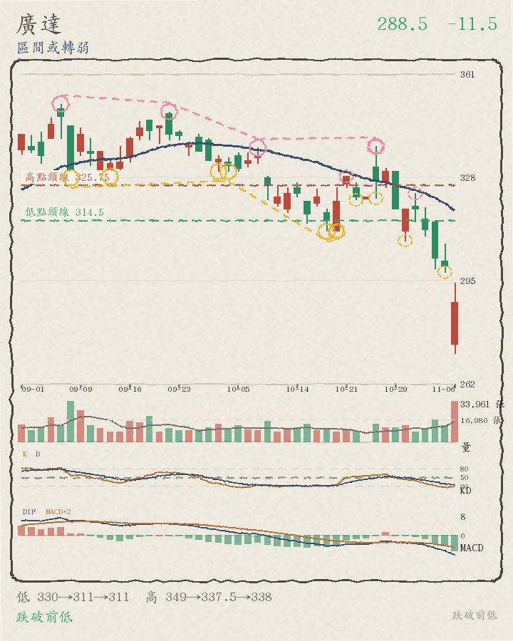
12:31 盤中 281（-5.70%），比加權指數弱 4.37 個百分點、跌破月線 313.9，離高點頸線 304 還差 7.6%，轉折還沒走出明顯方向。
- 月線位置：現價 281 在月線 313.9 之下（-10.5%）；5 日線 296.7 也在月線之下（短均在下）；月線向下
- 量能：以已過交易時間推估，今天成交量約是 20 日均量的 2.21 倍（爆量），比 20 日均量大不少；下跌卻量增，量價背離
- 關鍵價位：高點頸線 304 還沒突破，差 7.6%；前一交易日高點 299.5（低於 6.2%）；今天盤中高點 296（低於 5.1%）；今天盤中低點 280（高於 0.4%）
- 轉折結構：低點 311、311、272 與高點 349、337.5、338 都沒有明顯遞增，屬於區間震盪或轉弱；還沒確認的轉折低點 11-06 272、11-11 290；還沒確認的轉折高點 11-09 304、11-10 304（圖上虛線小圈）
雙鴻 3324 上櫃
1170 -130.0（-10.00%）
區間或轉弱 盤中成交值 60.78 億・全榜第 39 名（上櫃第 8 名）・相對大盤 -8.67
好條件 0/7：無
不好條件 6/7：跌破前低、今日下跌、相對大盤弱、在月線之下、跌破昨日低點、月線下彎
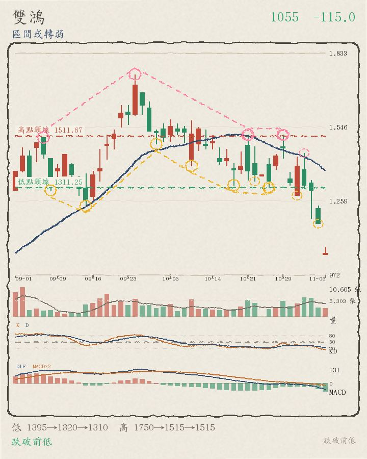
12:31 盤中 1170（-10.00%），比加權指數弱 8.67 個百分點、跌破月線 1334.25，離高點頸線 1511.67 還差 22.6%，轉折還沒走出明顯方向。
- 月線位置：現價 1170 在月線 1334.25 之下（-12.3%）；5 日線 1182 也在月線之下（短均在下）；月線向下
- 量能：以已過交易時間推估，今天成交量約是 20 日均量的 1.62 倍（爆量），比 20 日均量大不少；下跌卻量增，量價背離
- 關鍵價位：已跌破前一個轉折低點；高點頸線 1511.67 還在現價上方 22.6%；前一交易日高點 1315（低於 11.0%）；今天盤中高點 1270（低於 7.9%）；今天盤中低點 1170（高於 0.0%）
- 轉折結構：低點 1395、1320、1310 與高點 1750、1515、1515 都沒有明顯遞增，屬於區間震盪或轉弱；還沒確認的轉折低點 11-02 1280、11-09 1050；還沒確認的轉折高點 11-03 1445、11-11 1315（圖上虛線小圈）
力積電 6770 上市
57.6 -0.9（-1.54%）
區間或轉弱 盤中成交值 60.04 億・全榜第 40 名（上市第 32 名）・相對大盤 -0.21
好條件 0/7：無
不好條件 4/7：今日下跌、相對大盤弱、在月線之下、月線下彎
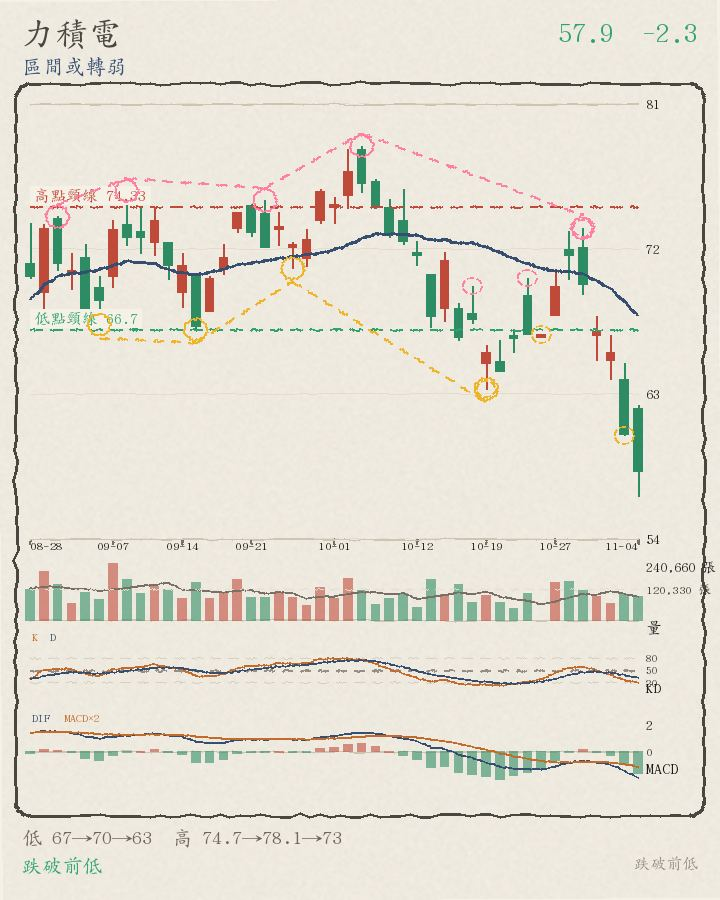
12:31 盤中 57.6（-1.54%），比加權指數弱 0.21 個百分點、跌破月線 63.905，離高點頸線 74.17 還差 22.3%，轉折還沒走出明顯方向。
- 月線位置：現價 57.6 在月線 63.905 之下（-9.9%）；5 日線 56.7 也在月線之下（短均在下）；月線向下
- 量能：以已過交易時間推估，今天成交量約是 20 日均量的 1.20 倍（量增），比 20 日均量大不少；下跌卻量增，量價背離
- 關鍵價位：高點頸線 74.17 還沒突破，差 22.3%；前一交易日高點 58.7（低於 1.9%）；今天盤中高點 60.4（低於 4.6%）；今天盤中低點 57.6（高於 0.0%）
- 轉折結構：低點 70.5、63、49.35 與高點 74.7、78.1、73 都沒有明顯遞增，屬於區間震盪或轉弱；還沒確認的轉折低點 11-06 49.35、11-11 55.9；還沒確認的轉折高點 10-29 73、11-10 63（圖上虛線小圈）
量增
↑ 回上方清單
藥華藥 6446 上市
1380 +45.0（+3.37%）
高點墊高、底部不穩 盤中成交值 59.89 億・全榜第 41 名（上市第 33 名）・相對大盤 +4.70
好條件 5/7：站上月線、月線向上、頭頭高、突破頸線、攻擊量（量增＋上漲）
不好條件 0/7：無

12:31 盤中 1380（+3.37%），比加權指數強 4.70 個百分點、站上月線 1219.5，已突破高點頸線 1242.5，高點還在墊高（但底部沒同步墊高）。
- 月線位置：現價 1380 在月線 1219.5 之上（+13.2%）；5 日線 1288 也在月線之上（短均在上）；月線向上
- 量能：以已過交易時間推估，今天成交量約是 20 日均量的 2.02 倍（爆量），比 20 日均量大不少；上漲又量增，量價配合
- 關鍵價位：高點頸線 1242.5 已站上；前一交易日高點 1335（高於 3.4%）；今天盤中高點 1410（低於 2.1%）；今天盤中低點 1290（高於 7.0%）
- 轉折結構：高點 1235、1300、1255 墊高（頭頭高），但低點 1155、1145、1075 沒有同步墊高；還沒確認的轉折低點 11-06 1075、11-11 1235；還沒確認的轉折高點 10-29 1255、11-09 1390（圖上虛線小圈）
聯亞 3081 上櫃
2190 -25.0（-1.13%）
區間或轉弱 盤中成交值 58.17 億・全榜第 42 名（上櫃第 9 名）・相對大盤 +0.20
好條件 0/7：無
不好條件 4/7：今日下跌、在月線之下、貼近今日低點（1% 內）、月線下彎
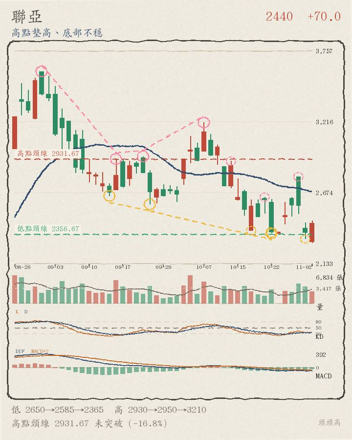
12:31 盤中 2190（-1.13%），比加權指數強 0.20 個百分點、跌破月線 2355.5，離高點頸線 2940 還差 25.5%，轉折還沒走出明顯方向。
- 月線位置：現價 2190 在月線 2355.5 之下（-7.0%）；5 日線 1979 也在月線之下（短均在下）；月線向下
- 量能：以已過交易時間推估，今天成交量約是 20 日均量的 1.05 倍（量平），比 20 日均量大一些
- 關鍵價位：高點頸線 2940 還沒突破，差 25.5%；前一交易日高點 2215（低於 1.1%）；今天盤中高點 2320（低於 5.6%）；今天盤中低點 2175（高於 0.7%）
- 轉折結構：低點 2585、2365、1705 與高點 2950、3210、2795 都沒有明顯遞增，屬於區間震盪或轉弱；還沒確認的轉折低點 11-06 1705、11-11 2115；還沒確認的轉折高點 11-02 2465、11-11 2215（圖上虛線小圈）
量平
↑ 回上方清單
智邦 2345 上市
1570 -5.0（-0.32%）
區間或轉弱 盤中成交值 53.62 億・全榜第 43 名（上市第 34 名）・相對大盤 +1.01
好條件 0/7：無
不好條件 4/7：今日下跌、在月線之下、貼近今日低點（1% 內）、月線下彎
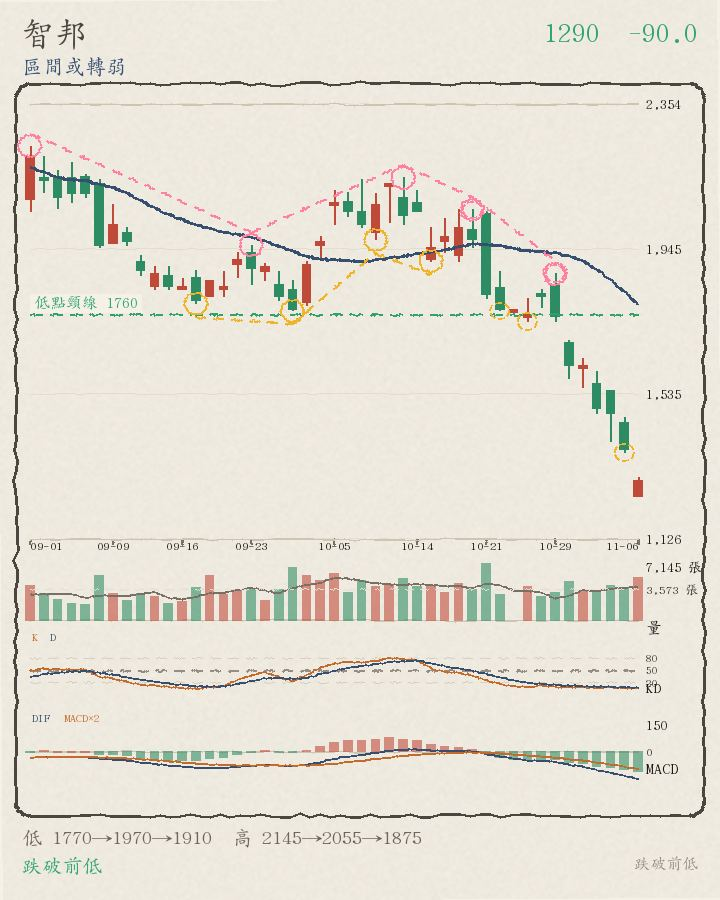
12:31 盤中 1570（-0.32%），比加權指數強 1.01 個百分點、跌破月線 1702，轉折還沒走出明顯方向。
- 月線位置：現價 1570 在月線 1702 之下（-7.8%）；5 日線 1437 也在月線之下（短均在下）；月線向下
- 量能：以已過交易時間推估，今天成交量約是 20 日均量的 1.03 倍（量平），跟 20 日均量差不多
- 關鍵價位：前一交易日高點 1585（低於 0.9%）；今天盤中高點 1665（低於 5.7%）；今天盤中低點 1560（高於 0.6%）
- 轉折結構：低點 1970、1910、1245 與高點 2145、2055、1875 都沒有明顯遞增，屬於區間震盪或轉弱；還沒確認的轉折低點 10-27 1740、11-06 1245；還沒確認的轉折高點 10-29 1875、11-11 1585（圖上虛線小圈）
量平
↑ 回上方清單
昇達科 3491 上櫃
1485 +50.0（+3.48%）
區間或轉弱 盤中成交值 50.89 億・全榜第 44 名（上櫃第 10 名）・相對大盤 +4.81
好條件 3/7：站上月線、突破頸線、攻擊量（量增＋上漲）
不好條件 1/7：月線下彎

12:31 盤中 1485（+3.48%），比加權指數強 4.81 個百分點、站上月線 1305.75，已突破高點頸線 1452.5，轉折還沒走出明顯方向。
- 月線位置：現價 1485 在月線 1305.75 之上（+13.7%）；5 日線 1239 也在月線之下（短均在下）；月線向下
- 量能：以已過交易時間推估，今天成交量約是 20 日均量的 3.91 倍（爆量），比 20 日均量大不少；上漲又量增，量價配合
- 關鍵價位：高點頸線 1452.5 已站上；前一交易日高點 1435（高於 3.5%）；今天盤中高點 1575（低於 5.7%）；今天盤中低點 1440（高於 3.1%）
- 轉折結構：低點 1450、1315、1065 與高點 1630、1760、1470 都沒有明顯遞增，屬於區間震盪或轉弱；還沒確認的轉折低點 11-04 1135、11-06 1065；還沒確認的轉折高點 11-03 1330、11-11 1435（圖上虛線小圈）
緯創 3231 上市
174 -0.5（-0.29%）
高點墊高、底部不穩 盤中成交值 48.52 億・全榜第 45 名（上市第 35 名）・相對大盤 +1.04
好條件 1/7：頭頭高
不好條件 3/7：今日下跌、在月線之下、月線下彎

12:31 盤中 174（-0.29%），比加權指數強 1.04 個百分點、跌破月線 181.15，離高點頸線 174.5 還差 0.3%，高點還在墊高（但底部沒同步墊高）。
- 月線位置：現價 174 在月線 181.15 之下（-4.0%）；5 日線 168.5 也在月線之下（短均在下）；月線向下
- 量能：以已過交易時間推估，今天成交量約是 20 日均量的 0.93 倍（量平），比 20 日均量少一些
- 關鍵價位：高點頸線 174.5 還沒突破，差 0.3%；前一交易日高點 174.5（低於 0.3%）；今天盤中高點 181（低於 3.9%）；今天盤中低點 172（高於 1.2%）
- 轉折結構：高點 190.5、194.5、199.5 墊高（頭頭高），但低點 182.5、173.5、152 沒有同步墊高；還沒確認的轉折低點 10-30 179.5、11-06 152；還沒確認的轉折高點 11-09 174.5、11-11 174.5（圖上虛線小圈）
緯穎 6669 上市
1600 -80.0（-4.76%）
區間或轉弱 盤中成交值 48.37 億・全榜第 46 名（上市第 36 名）・相對大盤 -3.43
好條件 0/7：無
不好條件 6/7：今日下跌、相對大盤弱、在月線之下、貼近今日低點（1% 內）、跌破昨日低點、月線下彎

12:31 盤中 1600（-4.76%），比加權指數弱 3.43 個百分點、跌破月線 1820.75，離高點頸線 2005 還差 20.2%，轉折還沒走出明顯方向。
- 月線位置：現價 1600 在月線 1820.75 之下（-12.1%）；5 日線 1642 也在月線之下（短均在下）；月線向下
- 量能：以已過交易時間推估，今天成交量約是 20 日均量的 0.77 倍（量平），比 20 日均量少很多
- 關鍵價位：高點頸線 2005 還沒突破，差 20.2%；前一交易日高點 1710（低於 6.4%）；今天盤中高點 1715（低於 6.7%）；今天盤中低點 1590（高於 0.6%）
- 轉折結構：低點 2080、1795、1485 與高點 2335、2020、1990 都沒有明顯遞增，屬於區間震盪或轉弱；還沒確認的轉折低點 11-02 1765、11-06 1485；還沒確認的轉折高點 11-03 1840、11-10 1730（圖上虛線小圈）
量平
↑ 回上方清單
健鼎 3044 上市
542 +22.0（+4.23%）
區間或轉弱 盤中成交值 46.74 億・全榜第 47 名（上市第 37 名）・相對大盤 +5.56
好條件 3/7：站上月線、突破頸線、攻擊量（量增＋上漲）
不好條件 1/7：月線下彎

12:31 盤中 542（+4.23%），比加權指數強 5.56 個百分點、站上月線 525.725，已突破高點頸線 529.5，轉折還沒走出明顯方向。
- 月線位置：現價 542 在月線 525.725 之上（+3.1%）；5 日線 457.8 也在月線之下（短均在下）；月線向下
- 量能：以已過交易時間推估，今天成交量約是 20 日均量的 3.26 倍（爆量），比 20 日均量大不少；上漲又量增，量價配合
- 關鍵價位：高點頸線 529.5 已站上；前一交易日高點 520（高於 4.2%）；今天盤中高點 572（低於 5.2%）；今天盤中低點 542（高於 0.0%）
- 轉折結構：低點 554、554、395 與高點 604、597、563 都沒有明顯遞增，屬於區間震盪或轉弱；還沒確認的轉折低點 10-30 502、11-06 395；還沒確認的轉折高點 11-02 539、11-11 520（圖上虛線小圈）
川湖 2059 上市
8455 -275.0（-3.15%）
區間或轉弱 盤中成交值 44.47 億・全榜第 48 名（上市第 38 名）・相對大盤 -1.82
好條件 0/7：無
不好條件 4/7：今日下跌、相對大盤弱、在月線之下、月線下彎
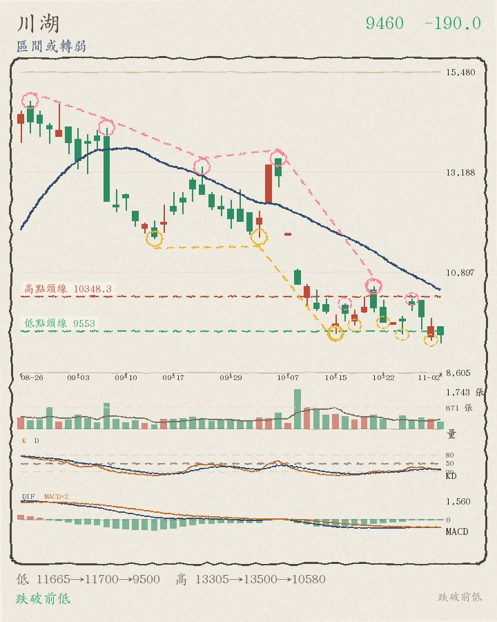
12:31 盤中 8455（-3.15%），比加權指數弱 1.82 個百分點、跌破月線 9345.25，離高點頸線 10435 還差 19.0%，轉折還沒走出明顯方向。
- 月線位置：現價 8455 在月線 9345.25 之下（-9.5%）；5 日線 8173 也在月線之下（短均在下）；月線向下
- 量能：以已過交易時間推估，今天成交量約是 20 日均量的 1.07 倍（量平），比 20 日均量大一些
- 關鍵價位：高點頸線 10435 還沒突破，差 19.0%；前一交易日高點 8770（低於 3.6%）；今天盤中高點 9100（低於 7.1%）；今天盤中低點 8350（高於 1.3%）
- 轉折結構：低點 11700、9500、7200 與高點 13500、10580、10290 都沒有明顯遞增，屬於區間震盪或轉弱；還沒確認的轉折低點 10-27 9475、11-06 7200；還沒確認的轉折高點 11-03 9850、11-11 8770（圖上虛線小圈）
量平
↑ 回上方清單
景碩 3189 上市
676 -65.0（-8.77%）
區間或轉弱 盤中成交值 44.17 億・全榜第 49 名（上市第 39 名）・相對大盤 -7.44
好條件 0/7：無
不好條件 6/7：今日下跌、相對大盤弱、在月線之下、貼近今日低點（1% 內）、跌破昨日低點、月線下彎

12:31 盤中 676（-8.77%），比加權指數弱 7.44 個百分點、跌破月線 897.15，離高點頸線 1060 還差 36.2%，轉折還沒走出明顯方向。
- 月線位置：現價 676 在月線 897.15 之下（-24.6%）；5 日線 717.4 也在月線之下（短均在下）；月線向下
- 量能：以已過交易時間推估，今天成交量約是 20 日均量的 0.49 倍（量縮），比 20 日均量少很多
- 關鍵價位：高點頸線 1060 還沒突破，差 36.2%；前一交易日高點 750（低於 9.9%）；今天盤中高點 745（低於 9.3%）；今天盤中低點 673（高於 0.4%）
- 轉折結構：低點 784、941、666 與高點 835、1150、1065 都沒有明顯遞增，屬於區間震盪或轉弱；還沒確認的轉折低點 11-09 666、11-11 688；還沒確認的轉折高點 10-27 1055、11-10 752（圖上虛線小圈）
量縮
↑ 回上方清單
鴻海 2317 上市
242 +0.0（+0.00%）
區間或轉弱 盤中成交值 43.53 億・全榜第 50 名（上市第 40 名）・相對大盤 +1.33
好條件 0/7：無
不好條件 2/7：在月線之下、月線下彎
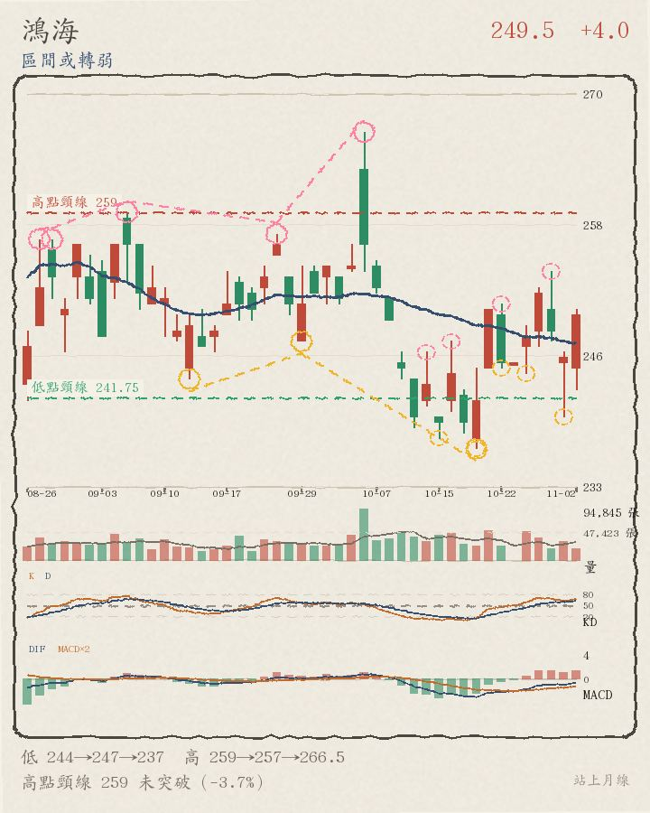
12:31 盤中 242（+0.00%），比加權指數強 1.33 個百分點、跌破月線 242.925，離高點頸線 255.92 還差 5.4%，轉折還沒走出明顯方向。
- 月線位置：現價 242 在月線 242.925 之下（-0.4%）；5 日線 236.4 也在月線之下（短均在下）；月線向下
- 量能：以已過交易時間推估，今天成交量約是 20 日均量的 0.52 倍（量縮），比 20 日均量少很多
- 關鍵價位：高點頸線 255.92 還沒突破，差 5.4%；前一交易日高點 242.5（低於 0.2%）；今天盤中高點 245（低於 1.2%）；今天盤中低點 239（高於 1.3%）
- 轉折結構：低點 247、237、212.5 與高點 257、266.5、253.5 都沒有明顯遞增，屬於區間震盪或轉弱；還沒確認的轉折低點 11-06 212.5、11-11 236；還沒確認的轉折高點 11-02 252、11-10 247.5（圖上虛線小圈）
量縮
↑ 回上方清單
群聯 8299 上櫃
1690 -40.0（-2.31%）
區間或轉弱 盤中成交值 42.69 億・全榜第 51 名（上櫃第 11 名）・相對大盤 -0.98
好條件 0/7：無
不好條件 4/7：今日下跌、相對大盤弱、在月線之下、月線下彎
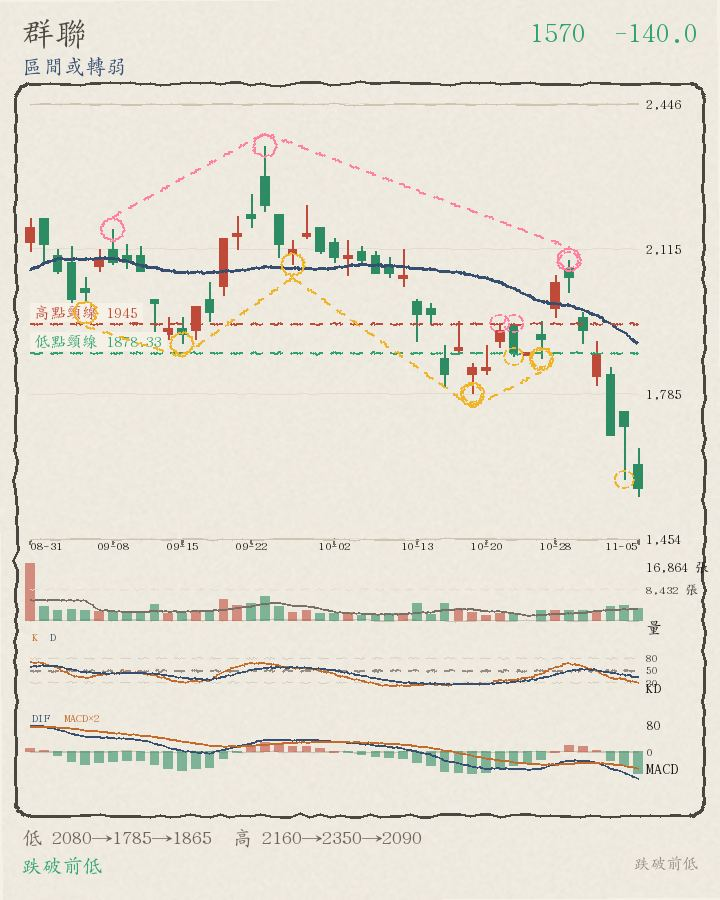
12:31 盤中 1690（-2.31%），比加權指數弱 0.98 個百分點、跌破月線 1819.25，離高點頸線 2190 還差 22.8%，轉折還沒走出明顯方向。
- 月線位置：現價 1690 在月線 1819.25 之下（-7.1%）；5 日線 1623 也在月線之下（短均在下）；月線向下
- 量能：以已過交易時間推估，今天成交量約是 20 日均量的 0.99 倍（量平），跟 20 日均量差不多
- 關鍵價位：高點頸線 2190 還沒突破，差 22.8%；前一交易日高點 1740（低於 2.9%）；今天盤中高點 1765（低於 4.2%）；今天盤中低點 1690（高於 0.0%）
- 轉折結構：低點 1785、1865、1405 與高點 2160、2350、2090 都沒有明顯遞增，屬於區間震盪或轉弱；還沒確認的轉折低點 11-06 1405、11-10 1630；還沒確認的轉折高點 10-29 2090、11-10 1760（圖上虛線小圈）
量平
↑ 回上方清單
穎崴 6515 上市
4095 +5.0（+0.12%）
區間或轉弱 盤中成交值 41.61 億・全榜第 52 名（上市第 41 名）・相對大盤 +1.45
好條件 1/7：攻擊量（量增＋上漲）
不好條件 2/7：在月線之下、月線下彎
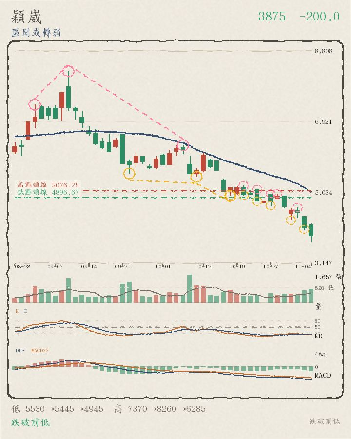
12:31 盤中 4095（+0.12%），比加權指數強 1.45 個百分點、跌破月線 4512，離高點頸線 4995 還差 18.0%，轉折還沒走出明顯方向。
- 月線位置：現價 4095 在月線 4512 之下（-9.2%）；5 日線 3644 也在月線之下（短均在下）；月線向下
- 量能：以已過交易時間推估，今天成交量約是 20 日均量的 2.40 倍（爆量），比 20 日均量大不少；上漲又量增，量價配合
- 關鍵價位：高點頸線 4995 還沒突破，差 18.0%；前一交易日高點 4090（高於 0.1%）；今天盤中高點 4325（低於 5.3%）；今天盤中低點 4040（高於 1.4%）
- 轉折結構：低點 5445、4945、3260 與高點 7370、8260、6285 都沒有明顯遞增，屬於區間震盪或轉弱；還沒確認的轉折低點 11-06 3260、11-09 3260；還沒確認的轉折高點 11-02 4625、11-11 4090（圖上虛線小圈）
台表科 6278 上市
237 -1.5（-0.63%）
區間或轉弱 盤中成交值 41.22 億・全榜第 53 名（上市第 42 名）・相對大盤 +0.70
好條件 0/7：無
不好條件 3/7：今日下跌、在月線之下、月線下彎

12:31 盤中 237（-0.63%），比加權指數強 0.70 個百分點、跌破月線 259.575，離高點頸線 296.5 還差 20.1%，轉折還沒走出明顯方向。
- 月線位置：現價 237 在月線 259.575 之下（-8.7%）；5 日線 207 也在月線之下（短均在下）；月線向下
- 量能：以已過交易時間推估，今天成交量約是 20 日均量的 1.14 倍（量增），比 20 日均量大一些；下跌卻量增，量價背離
- 關鍵價位：高點頸線 296.5 還沒突破，差 20.1%；前一交易日高點 239.5（低於 1.0%）；今天盤中高點 246（低於 3.7%）；今天盤中低點 230（高於 3.0%）
- 轉折結構：低點 211.5、276、180 與高點 223、316.5、316.5 都沒有明顯遞增，屬於區間震盪或轉弱；還沒確認的轉折低點 11-06 180；還沒確認的轉折高點 10-29 290.5、11-11 239.5（圖上虛線小圈）
量增
↑ 回上方清單
GIS-KY 6456 上市
101.5 +8.9（+9.61%）
區間或轉弱 盤中成交值 39.81 億・全榜第 54 名（上市第 43 名）・相對大盤 +10.94
好條件 3/7：站上月線、突破頸線、攻擊量（量增＋上漲）
不好條件 1/7：月線下彎
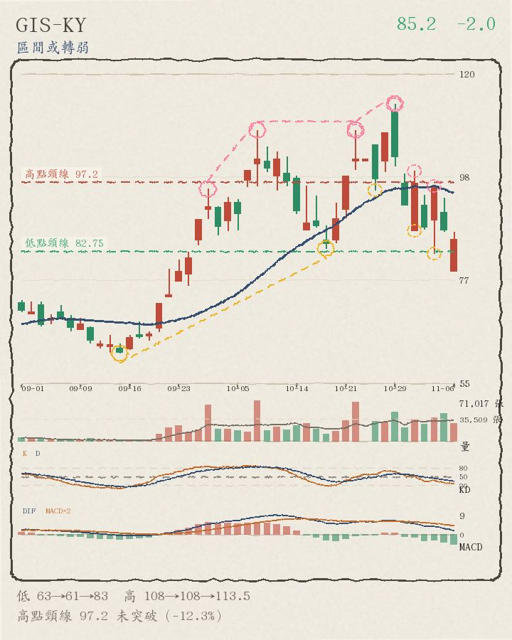
12:31 盤中 101.5（+9.61%），比加權指數強 10.94 個百分點、站上月線 92.335，已突破高點頸線 97.95，轉折還沒走出明顯方向。
- 月線位置：現價 101.5 在月線 92.335 之上（+9.9%）；5 日線 84.24 也在月線之下（短均在下）；月線向下
- 量能：以已過交易時間推估，今天成交量約是 20 日均量的 1.39 倍（量增），比 20 日均量大不少；上漲又量增，量價配合
- 關鍵價位：高點頸線 97.95 已站上；前一交易日高點 92.6（高於 9.6%）；今天盤中高點 101.5（高於 0.0%）；今天盤中低點 93.1（高於 9.0%）
- 轉折結構：低點 62.9、61.4、83.3 與高點 108、108、113.5 都沒有明顯遞增，屬於區間震盪或轉弱；還沒確認的轉折低點 11-04 82.2、11-09 75.4；還沒確認的轉折高點 11-04 96.4、11-11 92.6（圖上虛線小圈）
力成 6239 上市
246.5 +4.5（+1.86%）
區間或轉弱 盤中成交值 37.51 億・全榜第 55 名（上市第 44 名）・相對大盤 +3.19
好條件 1/7：攻擊量（量增＋上漲）
不好條件 2/7：在月線之下、月線下彎
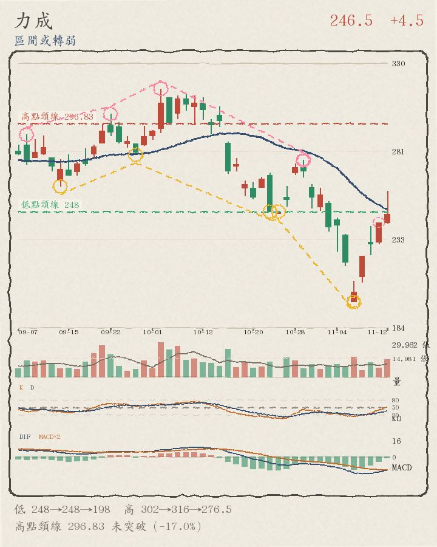
12:31 盤中 246.5（+1.86%），比加權指數強 3.19 個百分點、跌破月線 251.7，離高點頸線 296.83 還差 17.0%，轉折還沒走出明顯方向。
- 月線位置：現價 246.5 在月線 251.7 之下（-2.1%）；5 日線 223.8 也在月線之下（短均在下）；月線向下
- 量能：以已過交易時間推估，今天成交量約是 20 日均量的 1.73 倍（爆量），比 20 日均量大不少；上漲又量增，量價配合
- 關鍵價位：高點頸線 296.83 還沒突破，差 17.0%；前一交易日高點 242（高於 1.9%）；今天盤中高點 259.5（低於 5.0%）；今天盤中低點 241.5（高於 2.1%）
- 轉折結構：低點 248、248、198 與高點 302、316、276.5 都沒有明顯遞增，屬於區間震盪或轉弱；還沒確認的轉折低點 11-06 198；還沒確認的轉折高點 10-29 276.5、11-11 242（圖上虛線小圈）
信驊 5274 上櫃
12345 -210.0（-1.67%）
區間或轉弱 盤中成交值 37.16 億・全榜第 56 名（上櫃第 12 名）・相對大盤 -0.34
好條件 0/7：無
不好條件 6/7：跌破前低、今日下跌、相對大盤弱、在月線之下、貼近今日低點（1% 內）、月線下彎

12:31 盤中 12345（-1.67%），比加權指數弱 0.34 個百分點、跌破月線 15059.5，轉折還沒走出明顯方向。
- 月線位置：現價 12345 在月線 15059.5 之下（-18.0%）；5 日線 12040 也在月線之下（短均在下）；月線向下
- 量能：以已過交易時間推估，今天成交量約是 20 日均量的 0.94 倍（量平），比 20 日均量少一些
- 關鍵價位：前一交易日高點 12590（低於 1.9%）；今天盤中高點 13375（低於 7.7%）；今天盤中低點 12300（高於 0.4%）
- 轉折結構：低點 17170、15975、15500 與高點 19895、18465、17490 都沒有明顯遞增，屬於區間震盪或轉弱；還沒確認的轉折低點 10-27 15800、11-10 10710；還沒確認的轉折高點 11-09 11990、11-11 12590（圖上虛線小圈）
致茂 2360 上市
1470 +100.0（+7.30%）
區間或轉弱 盤中成交值 36.82 億・全榜第 57 名（上市第 45 名）・相對大盤 +8.63
好條件 0/7：無
不好條件 3/7：跌破前低、在月線之下、月線下彎

12:31 盤中 1470（+7.30%），比加權指數強 8.63 個百分點、跌破月線 1757，離高點頸線 2090 還差 29.7%，轉折還沒走出明顯方向。
- 月線位置：現價 1470 在月線 1757 之下（-16.3%）；5 日線 1294 也在月線之下（短均在下）；月線向下
- 量能：以已過交易時間推估，今天成交量約是 20 日均量的 0.96 倍（量平），跟 20 日均量差不多
- 關鍵價位：已跌破前一個轉折低點；高點頸線 2090 還在現價上方 29.7%；前一交易日高點 1395（高於 5.4%）；今天盤中高點 1505（低於 2.3%）；今天盤中低點 1415（高於 3.9%）
- 轉折結構：低點 2070、2025、1945 與高點 2560、2110、2070 都沒有明顯遞增，屬於區間震盪或轉弱；還沒確認的轉折低點 10-27 1905、11-09 1190；還沒確認的轉折高點 10-29 2070、11-11 1395（圖上虛線小圈）
精測 6510 上櫃
3310 +250.0（+8.17%）
區間或轉弱 盤中成交值 35.85 億・全榜第 58 名（上櫃第 13 名）・相對大盤 +9.50
好條件 3/7：站上月線、突破頸線、攻擊量（量增＋上漲）
不好條件 1/7：月線下彎

12:31 盤中 3310（+8.17%），比加權指數強 9.50 個百分點、站上月線 2905.75，已突破高點頸線 3020，轉折還沒走出明顯方向。
- 月線位置：現價 3310 在月線 2905.75 之上（+13.9%）；5 日線 2636 也在月線之下（短均在下）；月線向下
- 量能：以已過交易時間推估，今天成交量約是 20 日均量的 1.85 倍（爆量），比 20 日均量大不少；上漲又量增，量價配合
- 關鍵價位：高點頸線 3020 已站上；前一交易日高點 3060（高於 8.2%）；今天盤中高點 3365（低於 1.6%）；今天盤中低點 3005（高於 10.1%）
- 轉折結構：低點 3000、2825、2250 與高點 3775、3580、3345 都沒有明顯遞增，屬於區間震盪或轉弱；還沒確認的轉折低點 10-30 2635、11-06 2250；還沒確認的轉折高點 11-02 2980、11-11 3060（圖上虛線小圈）
貿聯-KY 3665 上市
1550 -30.0（-1.90%）
區間或轉弱 盤中成交值 34.58 億・全榜第 59 名（上市第 46 名）・相對大盤 -0.57
好條件 0/7：無
不好條件 5/7：跌破前低、今日下跌、相對大盤弱、在月線之下、月線下彎

12:31 盤中 1550（-1.90%），比加權指數弱 0.57 個百分點、跌破月線 1741.75，轉折還沒走出明顯方向。
- 月線位置：現價 1550 在月線 1741.75 之下（-11.0%）；5 日線 1465 也在月線之下（短均在下）；月線向下
- 量能：以已過交易時間推估，今天成交量約是 20 日均量的 0.93 倍（量平），比 20 日均量少一些
- 關鍵價位：前一交易日高點 1595（低於 2.8%）；今天盤中高點 1630（低於 4.9%）；今天盤中低點 1530（高於 1.3%）
- 轉折結構：低點 2095、1930、1810 與高點 2375、2685、2080 都沒有明顯遞增，屬於區間震盪或轉弱；還沒確認的轉折低點 11-02 1555、11-09 1295；還沒確認的轉折高點 11-03 1675、11-11 1595（圖上虛線小圈）
頎邦 6147 上櫃
172 -0.5（-0.29%）
區間或轉弱 盤中成交值 34.02 億・全榜第 60 名（上櫃第 14 名）・相對大盤 +1.04
好條件 0/7：無
不好條件 4/7：今日下跌、在月線之下、貼近今日低點（1% 內）、月線下彎
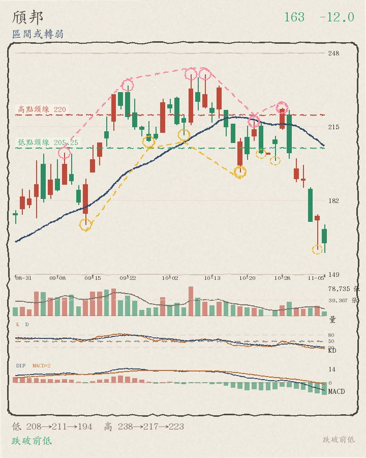
12:31 盤中 172（-0.29%），比加權指數強 1.04 個百分點、跌破月線 192.45，離高點頸線 220 還差 21.8%，轉折還沒走出明顯方向。
- 月線位置：現價 172 在月線 192.45 之下（-10.6%）；5 日線 159.5 也在月線之下（短均在下）；月線向下
- 量能：以已過交易時間推估，今天成交量約是 20 日均量的 1.06 倍（量平），比 20 日均量大一些
- 關鍵價位：高點頸線 220 還沒突破，差 21.8%；前一交易日高點 174.5（低於 1.4%）；今天盤中高點 180（低於 4.4%）；今天盤中低點 170.5（高於 0.9%）
- 轉折結構：低點 211、194.5、142 與高點 238、217、223 都沒有明顯遞增，屬於區間震盪或轉弱；還沒確認的轉折低點 10-27 199.5、11-06 142；還沒確認的轉折高點 10-28 223、11-11 174.5（圖上虛線小圈）
量平
↑ 回上方清單
倉和 6538 上櫃
333 +25.5（+8.29%）
區間或轉弱 盤中成交值 32.75 億・全榜第 61 名（上櫃第 15 名）・相對大盤 +9.62
好條件 2/7：站上月線、攻擊量（量增＋上漲）
不好條件 1/7：月線下彎
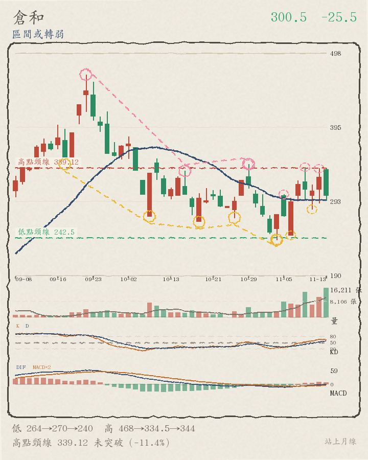
12:31 盤中 333（+8.29%），比加權指數強 9.62 個百分點、站上月線 294.725，離高點頸線 339.5 還差 1.9%，轉折還沒走出明顯方向。
- 月線位置：現價 333 在月線 294.725 之上（+13.0%）；5 日線 299.7 也在月線之上（短均在上）；月線向下
- 量能：以已過交易時間推估，今天成交量約是 20 日均量的 3.24 倍（爆量），比 20 日均量大不少；上漲又量增，量價配合
- 關鍵價位：高點頸線 339.5 還沒突破，差 1.9%；前一交易日高點 316（高於 5.4%）；今天盤中高點 338（低於 1.5%）；今天盤中低點 290（高於 14.8%）
- 轉折結構：低點 264.5、270、239.5 與高點 468、334.5、344 都沒有明顯遞增，屬於區間震盪或轉弱；還沒確認的轉折低點 11-06 245.5、11-11 281.5；還沒確認的轉折高點 11-05 302.5、11-10 340（圖上虛線小圈）
尖點 8021 上市
399 +4.5（+1.14%）
區間或轉弱 盤中成交值 32.13 億・全榜第 62 名（上市第 47 名）・相對大盤 +2.47
好條件 1/7：攻擊量（量增＋上漲）
不好條件 3/7：在月線之下、貼近今日低點（1% 內）、月線下彎

12:31 盤中 399（+1.14%），比加權指數強 2.47 個百分點、跌破月線 433.3，離高點頸線 482.25 還差 17.3%，轉折還沒走出明顯方向。
- 月線位置：現價 399 在月線 433.3 之下（-7.9%）；5 日線 350.3 也在月線之下（短均在下）；月線向下
- 量能：以已過交易時間推估，今天成交量約是 20 日均量的 1.76 倍（爆量），比 20 日均量大不少；上漲又量增，量價配合
- 關鍵價位：高點頸線 482.25 還沒突破，差 17.3%；前一交易日高點 402（低於 0.7%）；今天盤中高點 422（低於 5.5%）；今天盤中低點 398.5（高於 0.1%）
- 轉折結構：低點 410.5、466、306.5 與高點 481、481、584 都沒有明顯遞增，屬於區間震盪或轉弱；還沒確認的轉折低點 10-30 395.5、11-06 306.5；還沒確認的轉折高點 11-02 434、11-11 402（圖上虛線小圈）
京元電子 2449 上市
221.5 -9.5（-4.11%）
區間或轉弱 盤中成交值 30.43 億・全榜第 63 名（上市第 48 名）・相對大盤 -2.78
好條件 0/7：無
不好條件 7/7：跌破前低、今日下跌、相對大盤弱、在月線之下、貼近今日低點（1% 內）、跌破昨日低點、月線下彎
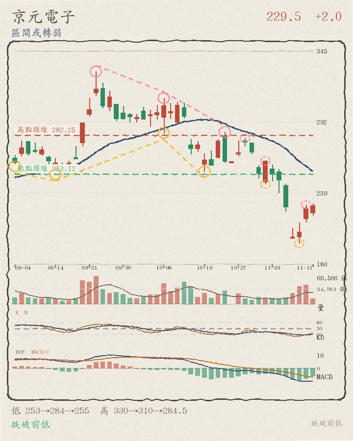
12:31 盤中 221.5（-4.11%），比加權指數弱 2.78 個百分點、跌破月線 255.325，離高點頸線 282.25 還差 21.5%，轉折還沒走出明顯方向。
- 月線位置：現價 221.5 在月線 255.325 之下（-13.2%）；5 日線 220.5 也在月線之下（短均在下）；月線向下
- 量能：以已過交易時間推估，今天成交量約是 20 日均量的 0.69 倍（量縮），比 20 日均量少很多
- 關鍵價位：已跌破前一個轉折低點；高點頸線 282.25 還在現價上方 21.5%；前一交易日高點 231（低於 4.1%）；今天盤中高點 235（低於 5.7%）；今天盤中低點 220.5（高於 0.5%）
- 轉折結構：低點 253、284、255 與高點 330、310、284.5 都沒有明顯遞增，屬於區間震盪或轉弱；還沒確認的轉折低點 11-02 245.5、11-09 201；還沒確認的轉折高點 11-02 263、11-11 231（圖上虛線小圈）
東台 4526 上市
57.8 +0.4（+0.70%）
上升趨勢（底底高＋頭頭高） 盤中成交值 29.62 億・全榜第 64 名（上市第 49 名）・相對大盤 +2.03
好條件 5/7：站上月線、月線向上、底底高、頭頭高、攻擊量（量增＋上漲）
不好條件 0/7：無
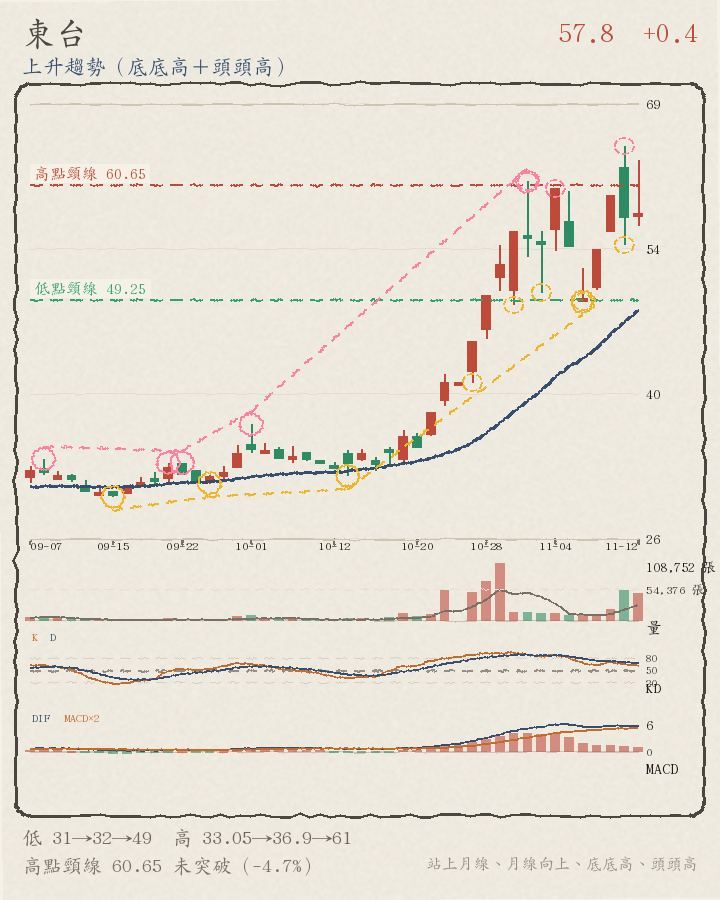
12:31 盤中 57.8（+0.70%），比加權指數強 2.03 個百分點、站上月線 47.038，離高點頸線 60.65 還差 4.7%，轉折結構仍是底底高＋頭頭高。
- 月線位置：現價 57.8 在月線 47.038 之上（+22.9%）；5 日線 55.01 也在月線之上（短均在上）；月線向上
- 量能：以已過交易時間推估，今天成交量約是 20 日均量的 2.89 倍（爆量），比 20 日均量大不少；上漲又量增，量價配合
- 關鍵價位：高點頸線 60.65 還沒突破，差 4.7%；前一交易日高點 64.5（低於 10.4%）；今天盤中高點 63.1（低於 8.4%）；今天盤中低點 56.6（高於 2.1%）
- 轉折結構：低點 31.05、31.8、49.05 一路墊高、高點 33.05、36.9、61 也一路墊高，是底底高＋頭頭高；還沒確認的轉折低點 11-06 49.05、11-11 54.7；還沒確認的轉折高點 11-04 60.3、11-11 64.5（圖上虛線小圈）
華星光 4979 上櫃
387.5 -8.5（-2.15%）
區間或轉弱 盤中成交值 28.96 億・全榜第 65 名（上櫃第 16 名）・相對大盤 -0.82
好條件 0/7：無
不好條件 4/7：今日下跌、相對大盤弱、在月線之下、月線下彎

12:31 盤中 387.5（-2.15%），比加權指數弱 0.82 個百分點、跌破月線 442.225，離高點頸線 654 還差 40.7%，轉折還沒走出明顯方向。
- 月線位置：現價 387.5 在月線 442.225 之下（-12.4%）；5 日線 358.2 也在月線之下（短均在下）；月線向下
- 量能：以已過交易時間推估，今天成交量約是 20 日均量的 1.78 倍（爆量），比 20 日均量大不少；下跌卻量增，量價背離
- 關鍵價位：高點頸線 654 還沒突破，差 40.7%；前一交易日高點 396（低於 2.1%）；今天盤中高點 410.5（低於 5.6%）；今天盤中低點 380.5（高於 1.8%）
- 轉折結構：低點 545、445、312 與高點 622、588、531 都沒有明顯遞增，屬於區間震盪或轉弱；還沒確認的轉折低點 10-27 450、11-06 312；還沒確認的轉折高點 10-29 531、11-11 396（圖上虛線小圈）
晶豪科 3006 上市
229.5 -5.5（-2.34%）
區間或轉弱 盤中成交值 28.15 億・全榜第 66 名（上市第 50 名）・相對大盤 -1.01
好條件 0/7：無
不好條件 4/7：今日下跌、相對大盤弱、在月線之下、月線下彎
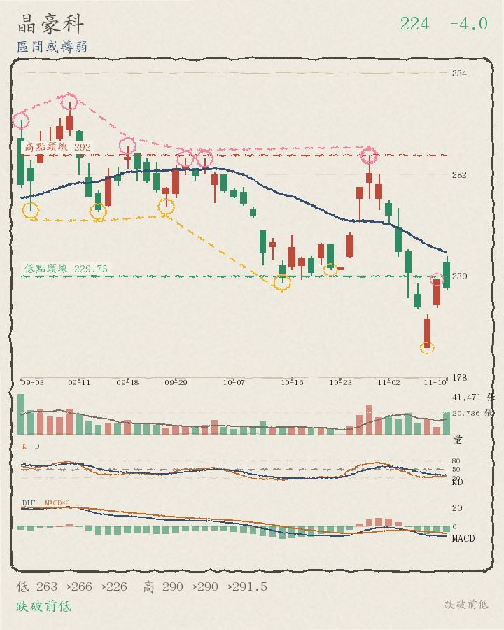
12:31 盤中 229.5（-2.34%），比加權指數弱 1.01 個百分點、跌破月線 241.775，離高點頸線 292 還差 21.4%，轉折還沒走出明顯方向。
- 月線位置：現價 229.5 在月線 241.775 之下（-5.1%）；5 日線 222 也在月線之下（短均在下）；月線向下
- 量能：以已過交易時間推估，今天成交量約是 20 日均量的 1.19 倍（量增），比 20 日均量大不少；下跌卻量增，量價背離
- 關鍵價位：高點頸線 292 還沒突破，差 21.4%；前一交易日高點 235（低於 2.3%）；今天盤中高點 247.5（低於 7.3%）；今天盤中低點 229.5（高於 0.0%）
- 轉折結構：低點 265.5、226.5、193 與高點 290、290、291.5 都沒有明顯遞增，屬於區間震盪或轉弱；還沒確認的轉折低點 11-06 193；還沒確認的轉折高點 10-29 291.5、11-10 240（圖上虛線小圈）
量增
↑ 回上方清單
建榮 5340 上櫃
94.6 -1.9（-1.97%）
高點墊高、底部不穩 盤中成交值 27.58 億・全榜第 67 名（上櫃第 17 名）・相對大盤 -0.64
好條件 3/7：站上月線、頭頭高、突破頸線
不好條件 4/7：今日下跌、相對大盤弱、貼近今日低點（1% 內）、月線下彎
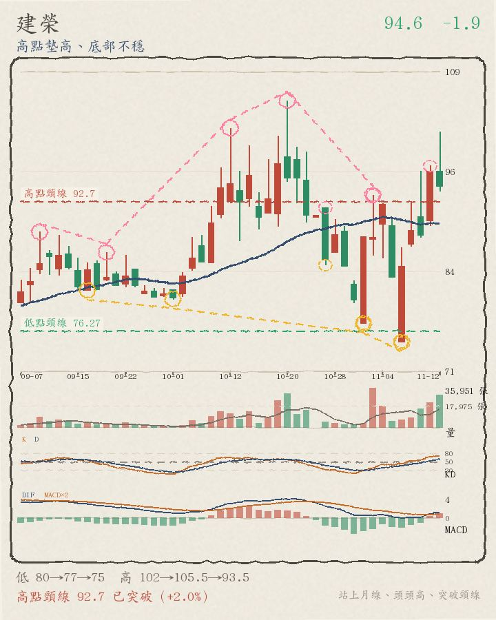
12:31 盤中 94.6（-1.97%），比加權指數弱 0.64 個百分點、站上月線 89.95，已突破高點頸線 92.7，高點還在墊高（但底部沒同步墊高）。
- 月線位置：現價 94.6 在月線 89.95 之上（+5.2%）；5 日線 88.3 也在月線之下（短均在下）；月線向下
- 量能：以已過交易時間推估，今天成交量約是 20 日均量的 3.15 倍（爆量），比 20 日均量大不少；下跌卻量增，量價背離
- 關鍵價位：高點頸線 92.7 已站上；前一交易日高點 97.2（低於 2.7%）；今天盤中高點 101.5（低於 6.8%）；今天盤中低點 94（高於 0.6%）
- 轉折結構：高點 102、105.5、93.5 墊高（頭頭高），但低點 80.3、77.2、74.8 沒有同步墊高；還沒確認的轉折低點 11-02 77.2、11-06 74.8；還沒確認的轉折高點 11-03 93.5、11-11 97.2（圖上虛線小圈）
碩禾 3691 上櫃
147 +11.5（+8.49%）
上升趨勢（底底高＋頭頭高） 盤中成交值 27.34 億・全榜第 68 名（上櫃第 18 名）・相對大盤 +9.82
好條件 5/7：站上月線、月線向上、底底高、頭頭高、攻擊量（量增＋上漲）
不好條件 0/7：無
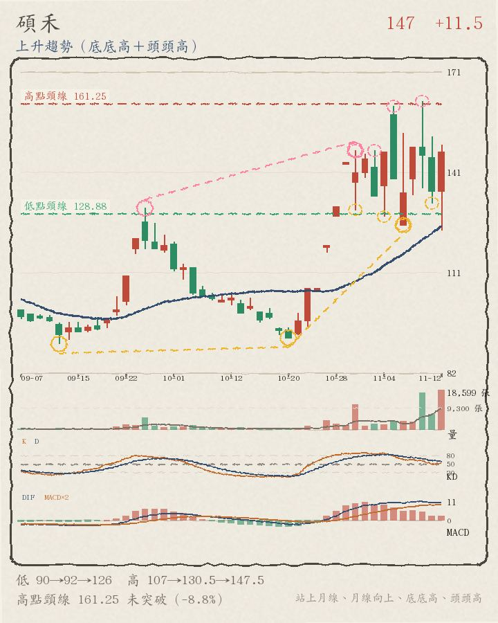
12:31 盤中 147（+8.49%），比加權指數強 9.82 個百分點、站上月線 123.02，離高點頸線 161.25 還差 8.8%，轉折結構仍是底底高＋頭頭高。
- 月線位置：現價 147 在月線 123.02 之上（+19.5%）；5 日線 140.8 也在月線之上（短均在上）；月線向上
- 量能：以已過交易時間推估，今天成交量約是 20 日均量的 7.77 倍（爆量），比 20 日均量大不少；上漲又量增，量價配合
- 關鍵價位：高點頸線 161.25 還沒突破，差 8.8%；前一交易日高點 151.5（低於 3.0%）；今天盤中高點 149（低於 1.3%）；今天盤中低點 124（高於 18.5%）
- 轉折結構：低點 90.5、92.3087、125.5 一路墊高、高點 107、130.5、147.5 也一路墊高，是底底高＋頭頭高；還沒確認的轉折低點 11-06 125.5、11-11 132；還沒確認的轉折高點 11-05 160.5、11-10 162（圖上虛線小圈）
合晶 6182 上櫃
83.6 -1.9（-2.22%）
區間或轉弱 盤中成交值 26.12 億・全榜第 69 名（上櫃第 19 名）・相對大盤 -0.89
好條件 0/7：無
不好條件 5/7：今日下跌、相對大盤弱、在月線之下、貼近今日低點（1% 內）、月線下彎
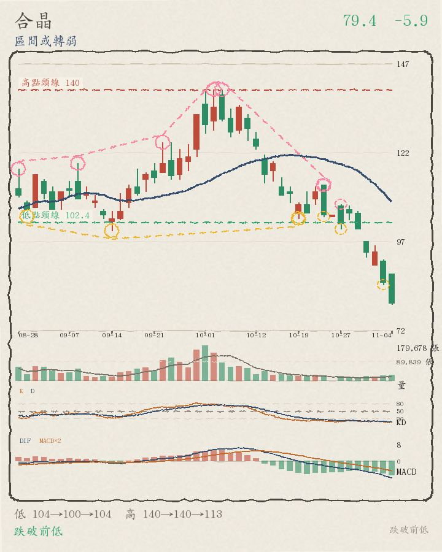
12:31 盤中 83.6（-2.22%），比加權指數弱 0.89 個百分點、跌破月線 96.07，離高點頸線 140 還差 40.3%，轉折還沒走出明顯方向。
- 月線位置：現價 83.6 在月線 96.07 之下（-13.0%）；5 日線 77.16 也在月線之下（短均在下）；月線向下
- 量能：以已過交易時間推估，今天成交量約是 20 日均量的 1.58 倍（爆量），比 20 日均量大不少；下跌卻量增，量價背離
- 關鍵價位：高點頸線 140 還沒突破，差 40.3%；前一交易日高點 86.2（低於 3.0%）；今天盤中高點 87.8（低於 4.8%）；今天盤中低點 83（高於 0.7%）
- 轉折結構：低點 100、103.5、67.3 與高點 140、140、113 都沒有明顯遞增，屬於區間震盪或轉弱；還沒確認的轉折低點 10-27 100.5、11-06 67.3；還沒確認的轉折高點 10-27 107.5、11-11 86.2（圖上虛線小圈）
德宏 5475 上櫃
198.5 -5.5（-2.70%）
高點墊高、底部不穩 盤中成交值 24.57 億・全榜第 70 名（上櫃第 20 名）・相對大盤 -1.37
好條件 2/7：站上月線、頭頭高
不好條件 4/7：今日下跌、相對大盤弱、貼近今日低點（1% 內）、月線下彎
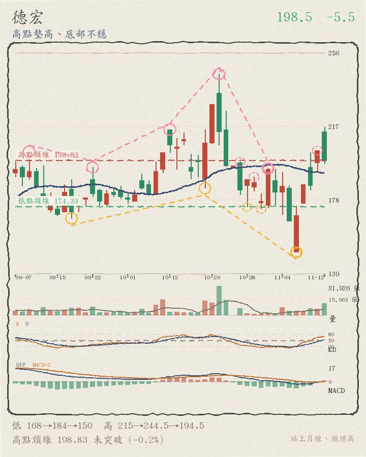
12:31 盤中 198.5（-2.70%），比加權指數弱 1.37 個百分點、站上月線 192.6，離高點頸線 198.83 還差 0.2%，高點還在墊高（但底部沒同步墊高）。
- 月線位置：現價 198.5 在月線 192.6 之上（+3.1%）；5 日線 182.3 也在月線之下（短均在下）；月線向下
- 量能：以已過交易時間推估，今天成交量約是 20 日均量的 2.37 倍（爆量），比 20 日均量大不少；下跌卻量增，量價背離
- 關鍵價位：高點頸線 198.83 還沒突破，差 0.2%；前一交易日高點 204（低於 2.7%）；今天盤中高點 216.5（低於 8.3%）；今天盤中低點 197（高於 0.8%）
- 轉折結構：高點 215、244.5、194.5 墊高（頭頭高），但低點 168、184、150 沒有同步墊高；還沒確認的轉折低點 10-30 173、11-06 150；還沒確認的轉折高點 11-02 194.5、11-11 204（圖上虛線小圈）